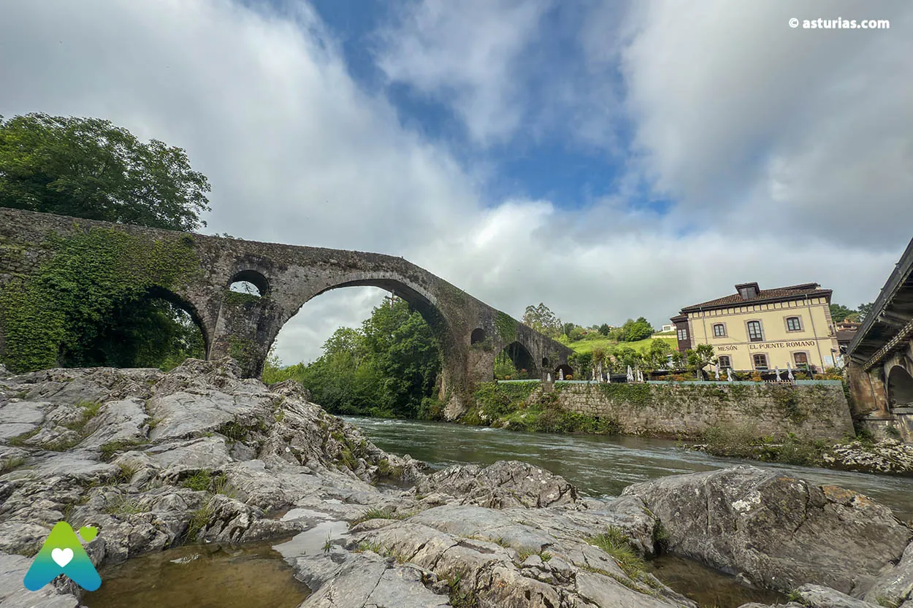
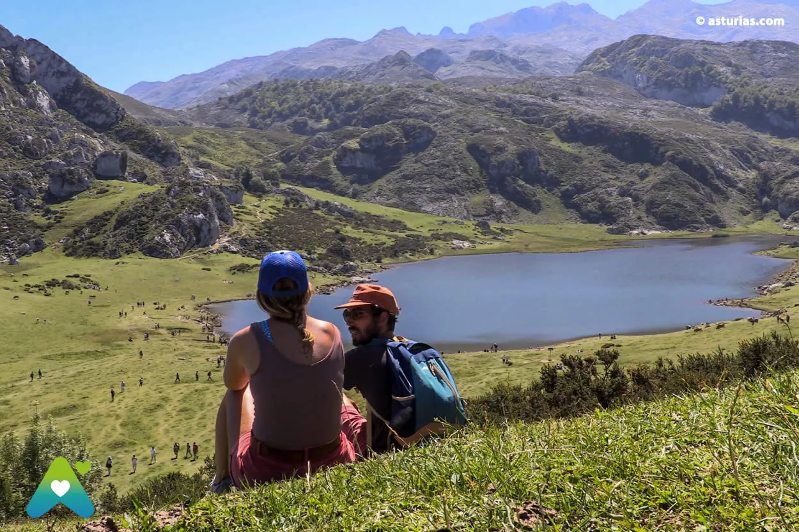
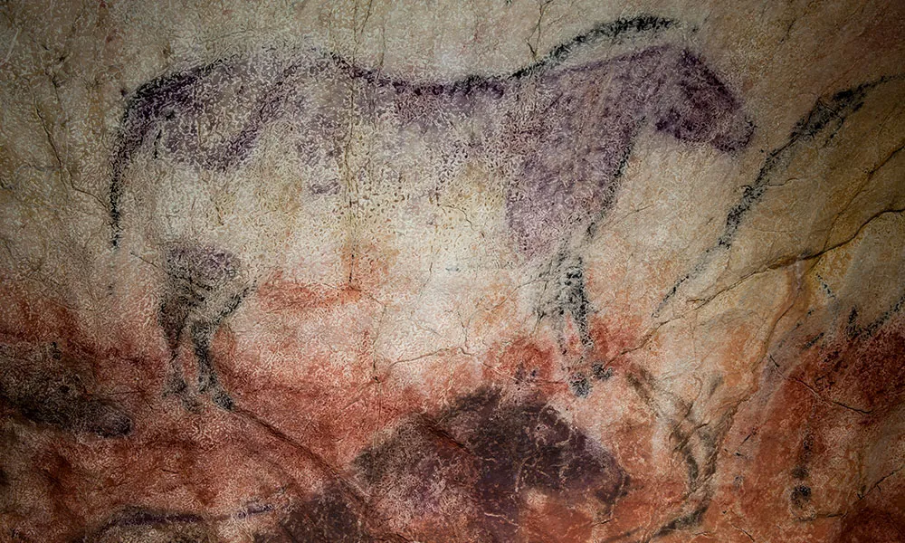
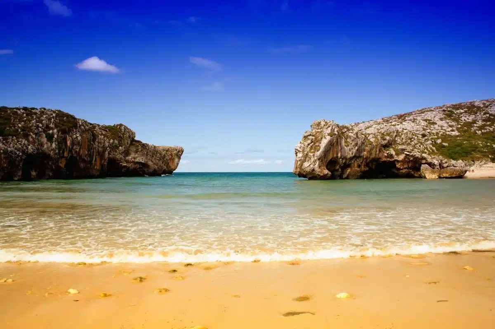
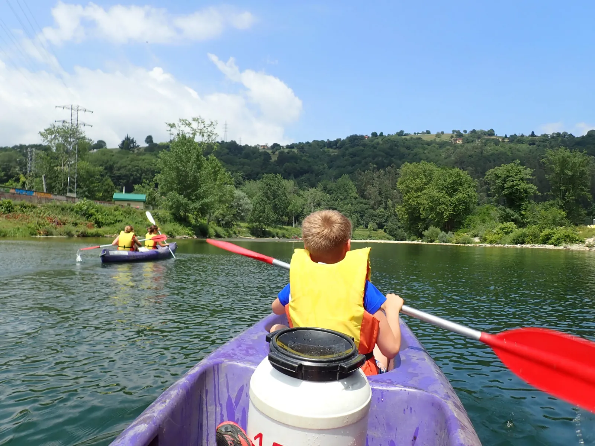

<style>
  /* ─────────────────────────────────────────────── */
  /*  ATLAS OF EXCURSIONS — ORDNANCE SURVEY SHEET     */
  /*  hand-drawn, sepia-and-cream cartographic vibe   */
  /* ─────────────────────────────────────────────── */

  @import url('https://fonts.googleapis.com/css2?family=Cormorant+Garamond:ital,wght@0,400;0,500;0,600;0,700;1,400&family=IM+Fell+English:ital@0;1&family=Caveat:wght@400;500;600;700&family=JetBrains+Mono:wght@400;500;700&display=swap');

  .atlas {
    --paper: #ede1c4;
    --paper-light: #f4ead5;
    --paper-dark: #d8c89a;
    --ink: #3a2c1a;
    --ink-soft: #5a4326;
    --ink-faded: #7a5b35;
    --red-ink: #a73a25;
    --red-deep: #7a2715;
    --blue-water: #4a6b87;
    --water-fill: #c5d1da;
    --terrain-green: #8a9b5e;
    --terrain-green-deep: #5e6e3c;
    --mountain: #b69a72;
    --mountain-deep: #8a6f4a;

    margin: 0;
    padding: 0;
    background:
      radial-gradient(ellipse at 20% 10%, rgba(122, 91, 53, 0.10) 0%, transparent 50%),
      radial-gradient(ellipse at 80% 90%, rgba(122, 91, 53, 0.08) 0%, transparent 50%),
      repeating-linear-gradient(0deg, transparent 0, transparent 2px, rgba(122, 91, 53, 0.012) 2px, rgba(122, 91, 53, 0.012) 3px),
      repeating-linear-gradient(90deg, transparent 0, transparent 2px, rgba(122, 91, 53, 0.012) 2px, rgba(122, 91, 53, 0.012) 3px),
      var(--paper);
    color: var(--ink);
    font-family: 'Cormorant Garamond', 'Georgia', serif;
    font-size: 16.5px;
    line-height: 1.6;
  }

  .atlas a { color: var(--red-ink); text-decoration: none; border-bottom: 1px dotted var(--red-ink); }
  .atlas a:hover { color: var(--red-deep); border-bottom-style: solid; }
  .atlas sup a { border: none; font-family: 'JetBrains Mono', monospace; font-size: 0.7em; color: var(--ink-faded); padding: 0 1px; }

  /* ───── SHEET HEADER ───── */
  .sheet-header {
    padding: 2.2rem 3rem 1.4rem;
    border-bottom: 2px solid var(--ink);
    position: relative;
  }
  .sheet-header::after {
    content: '';
    position: absolute;
    left: 3rem; right: 3rem; bottom: -6px;
    border-bottom: 1px solid var(--ink);
  }
  .sheet-strip {
    display: flex;
    justify-content: space-between;
    align-items: flex-end;
    gap: 2rem;
    font-family: 'IM Fell English', serif;
  }
  .sheet-strip .left { flex: 1; }
  .sheet-strip .kicker {
    font-family: 'JetBrains Mono', monospace;
    font-size: 0.7rem;
    letter-spacing: 0.25em;
    text-transform: uppercase;
    color: var(--ink-faded);
    margin-bottom: 0.4rem;
  }
  .sheet-strip h1 {
    font-family: 'IM Fell English', serif;
    font-size: 3.6rem;
    line-height: 0.95;
    margin: 0;
    color: var(--ink);
    font-weight: 400;
    letter-spacing: -0.01em;
  }
  .sheet-strip h1 em { font-style: italic; color: var(--red-deep); }
  .sheet-strip .subtitle {
    font-family: 'Caveat', cursive;
    font-size: 1.4rem;
    color: var(--ink-soft);
    margin-top: 0.6rem;
    line-height: 1.2;
  }
  .sheet-strip .right {
    text-align: right;
    font-family: 'JetBrains Mono', monospace;
    font-size: 0.72rem;
    line-height: 1.7;
    color: var(--ink-soft);
    min-width: 260px;
    border-left: 1px solid var(--ink-faded);
    padding-left: 1.5rem;
  }
  .sheet-strip .right .row { display: flex; justify-content: space-between; gap: 1.5rem; }
  .sheet-strip .right .row span:first-child { color: var(--ink-faded); }

  /* ───── MAIN GRID — map plate + marginalia ───── */
  .plate-1 {
    display: grid;
    grid-template-columns: minmax(0, 1.55fr) minmax(280px, 1fr);
    gap: 2rem;
    padding: 2rem 3rem;
    border-bottom: 2px solid var(--ink);
  }
  @media (max-width: 900px) { .plate-1 { grid-template-columns: 1fr; padding: 1.5rem 1.2rem; } }

  .map-stage {
    position: relative;
    background: var(--paper-light);
    border: 1.5px solid var(--ink);
    box-shadow:
      inset 0 0 0 4px var(--paper-light),
      inset 0 0 0 5px var(--ink-faded),
      0 1px 0 var(--paper-dark);
    aspect-ratio: 1 / 1;
  }
  .map-stage svg { width: 100%; height: 100%; display: block; }

  .map-caption {
    font-family: 'IM Fell English', serif;
    font-style: italic;
    font-size: 0.95rem;
    color: var(--ink-soft);
    text-align: center;
    margin-top: 0.8rem;
    line-height: 1.4;
  }

  /* ───── MARGINALIA (right column of plate 1) ───── */
  .marginalia {
    display: flex;
    flex-direction: column;
    gap: 1.2rem;
  }
  .panel {
    border: 1px solid var(--ink);
    padding: 1.1rem 1.2rem;
    background: var(--paper-light);
    position: relative;
  }
  .panel.legend { background: linear-gradient(180deg, var(--paper-light) 0%, var(--paper) 100%); }
  .panel-label {
    font-family: 'JetBrains Mono', monospace;
    font-size: 0.62rem;
    letter-spacing: 0.3em;
    text-transform: uppercase;
    color: var(--ink-faded);
    display: block;
    margin-bottom: 0.5rem;
    border-bottom: 1px solid var(--ink-faded);
    padding-bottom: 0.3rem;
  }
  .panel h3 {
    font-family: 'IM Fell English', serif;
    font-size: 1.4rem;
    margin: 0 0 0.5rem 0;
    color: var(--ink);
    font-weight: 400;
    line-height: 1.1;
  }
  .panel.verdict {
    background: var(--paper-light);
    border: 2px solid var(--red-ink);
    box-shadow: 4px 4px 0 -1px var(--paper), 4px 4px 0 var(--red-ink);
  }
  .panel.verdict h3 { color: var(--red-deep); font-style: italic; }
  .panel.verdict p { margin: 0.4rem 0; font-size: 1rem; }
  .panel.verdict .stamp {
    position: absolute;
    top: -10px;
    right: 14px;
    background: var(--paper);
    padding: 0 6px;
    font-family: 'JetBrains Mono', monospace;
    font-size: 0.62rem;
    letter-spacing: 0.3em;
    color: var(--red-ink);
  }
  .panel.notice {
    background: repeating-linear-gradient(135deg, var(--paper-light) 0px, var(--paper-light) 12px, rgba(167, 58, 37, 0.06) 12px, rgba(167, 58, 37, 0.06) 24px);
    border: 1.5px solid var(--red-ink);
  }
  .panel.notice h3 { font-family: 'Caveat', cursive; font-size: 1.7rem; color: var(--red-deep); font-weight: 700; }
  .panel.notice .siren { float: left; font-size: 2rem; line-height: 1; margin: 0 0.6rem 0 0; color: var(--red-ink); }
  .panel.notice p { font-size: 0.92rem; }

  .legend-grid {
    display: grid;
    grid-template-columns: auto 1fr;
    gap: 0.45rem 0.8rem;
    align-items: center;
    font-size: 0.84rem;
    line-height: 1.3;
  }
  .legend-glyph {
    width: 28px; height: 28px;
    display: flex; align-items: center; justify-content: center;
    background: var(--paper);
    border: 1px solid var(--ink-faded);
  }
  .legend-glyph svg { width: 100%; height: 100%; }

  /* ───── PLATES (numbered destination cards) ───── */
  .plates {
    padding: 0;
    border-bottom: 2px solid var(--ink);
  }
  .plates-header {
    padding: 1.8rem 3rem 1rem;
    border-bottom: 1px solid var(--ink-faded);
    background: linear-gradient(180deg, var(--paper-dark) 0%, var(--paper) 60%);
  }
  .plates-header h2 {
    font-family: 'IM Fell English', serif;
    font-size: 2.4rem;
    margin: 0;
    color: var(--ink);
    font-weight: 400;
    letter-spacing: -0.005em;
  }
  .plates-header .lede {
    font-family: 'Cormorant Garamond', serif;
    font-style: italic;
    color: var(--ink-soft);
    margin: 0.5rem 0 0;
    font-size: 1.05rem;
  }

  .plate-grid {
    display: grid;
    grid-template-columns: repeat(auto-fill, minmax(320px, 1fr));
    gap: 0;
    border-top: 1px solid var(--ink-faded);
  }
  .plate {
    border-right: 1px solid var(--ink-faded);
    border-bottom: 1px solid var(--ink-faded);
    padding: 1.4rem 1.4rem 1.5rem;
    position: relative;
    background: var(--paper);
    overflow: hidden;
  }
  .plate:last-child { border-right: 1px solid var(--ink-faded); }
  .plate-num {
    position: absolute;
    top: 12px;
    right: 14px;
    font-family: 'IM Fell English', serif;
    font-style: italic;
    font-size: 1.3rem;
    color: var(--ink-faded);
    letter-spacing: 0.1em;
  }
  .plate .pin-row {
    font-family: 'JetBrains Mono', monospace;
    font-size: 0.7rem;
    color: var(--ink-faded);
    letter-spacing: 0.15em;
    margin-bottom: 0.4rem;
    display: flex;
    align-items: center;
    gap: 0.55rem;
  }
  .plate .pin-dot {
    display: inline-block;
    width: 11px; height: 11px;
    background: var(--red-ink);
    border: 1.5px solid var(--paper-light);
    border-radius: 50%;
    box-shadow: 0 0 0 1.5px var(--red-deep);
  }
  .plate .pin-dot.out { background: var(--paper); }
  .plate h3 {
    font-family: 'IM Fell English', serif;
    font-size: 1.55rem;
    line-height: 1.1;
    color: var(--ink);
    margin: 0 0 0.4rem 0;
    font-weight: 400;
  }
  .plate h3 a { color: inherit; border-bottom: 1px dotted var(--ink-faded); }
  .plate h3 a:hover { color: var(--red-deep); }
  .plate .photo {
    width: calc(100% + 2.8rem);
    margin: 0.6rem -1.4rem 0.9rem;
    height: 140px;
    object-fit: cover;
    display: block;
    filter: sepia(0.18) contrast(1.04) saturate(0.9);
    border-top: 1px solid var(--ink);
    border-bottom: 1px solid var(--ink);
  }
  .plate .photo-caption {
    margin: -0.55rem -1.4rem 0.8rem;
    padding: 0.3rem 1.4rem;
    background: var(--paper-light);
    border-bottom: 1px solid var(--ink-faded);
    font-family: 'Caveat', cursive;
    color: var(--ink-soft);
    font-size: 1rem;
  }
  .plate p { font-size: 0.95rem; margin: 0.5rem 0; }
  .plate .price {
    font-family: 'JetBrains Mono', monospace;
    font-size: 0.78rem;
    background: var(--paper-light);
    border: 1px solid var(--ink-faded);
    padding: 0.25rem 0.55rem;
    display: inline-block;
    margin-right: 0.35rem;
    margin-top: 0.35rem;
    color: var(--ink);
  }
  .plate .note {
    font-family: 'Caveat', cursive;
    font-size: 1.08rem;
    color: var(--red-deep);
    margin-top: 0.7rem;
    line-height: 1.3;
    border-top: 1px dashed var(--ink-faded);
    padding-top: 0.55rem;
  }
  .plate.outside { background: repeating-linear-gradient(45deg, var(--paper) 0px, var(--paper) 8px, var(--paper-light) 8px, var(--paper-light) 16px); }
  .plate.outside::before {
    content: 'BEYOND THE CIRCLE';
    position: absolute;
    top: 12px; left: 14px;
    font-family: 'JetBrains Mono', monospace;
    font-size: 0.58rem;
    letter-spacing: 0.25em;
    color: var(--red-ink);
    background: var(--paper-light);
    padding: 2px 6px;
    border: 1px solid var(--red-ink);
  }
  .plate.outside h3 { margin-top: 1.4rem; }

  /* ───── SELLA CANOE SPECIAL INSET ───── */
  .canoe-inset {
    padding: 2.4rem 3rem;
    border-bottom: 2px solid var(--ink);
    background:
      radial-gradient(ellipse at 80% 50%, rgba(74, 107, 135, 0.10) 0%, transparent 60%),
      var(--paper);
    display: grid;
    grid-template-columns: 1.2fr 1fr;
    gap: 2.2rem;
    align-items: start;
  }
  @media (max-width: 900px) { .canoe-inset { grid-template-columns: 1fr; padding: 1.6rem 1.2rem; } }
  .canoe-inset .text h2 {
    font-family: 'IM Fell English', serif;
    font-size: 2.6rem;
    line-height: 0.95;
    color: var(--ink);
    margin: 0 0 0.6rem 0;
    font-weight: 400;
  }
  .canoe-inset .text h2 em { color: var(--blue-water); font-style: italic; }
  .canoe-inset .text .lede {
    font-family: 'Caveat', cursive;
    font-size: 1.4rem;
    color: var(--ink-soft);
    line-height: 1.3;
    margin: 0 0 1rem;
  }
  .canoe-inset .text p { font-size: 1rem; margin: 0.5rem 0; }
  .canoe-image {
    border: 1.5px solid var(--ink);
    box-shadow: 4px 4px 0 -1px var(--paper), 4px 4px 0 var(--ink);
    position: relative;
    background: var(--paper-light);
  }
  .canoe-image img { width: 100%; display: block; filter: sepia(0.15) contrast(1.05) saturate(0.92); }
  .canoe-image .tape {
    position: absolute;
    top: -14px; left: 30px;
    width: 90px; height: 24px;
    background: rgba(167, 58, 37, 0.32);
    border-left: 1px dashed rgba(167, 58, 37, 0.55);
    border-right: 1px dashed rgba(167, 58, 37, 0.55);
    transform: rotate(-3deg);
  }
  .canoe-tab {
    width: 100%;
    border-collapse: collapse;
    margin: 1rem 0 0;
    font-size: 0.86rem;
  }
  .canoe-tab th, .canoe-tab td {
    border-bottom: 1px solid var(--ink-faded);
    padding: 0.5rem 0.4rem;
    text-align: left;
    vertical-align: top;
  }
  .canoe-tab th {
    font-family: 'JetBrains Mono', monospace;
    font-size: 0.65rem;
    letter-spacing: 0.18em;
    text-transform: uppercase;
    color: var(--ink-faded);
    font-weight: 400;
    border-bottom: 2px solid var(--ink);
  }
  .canoe-tab td.price { font-family: 'JetBrains Mono', monospace; }
  .race-stamp {
    margin-top: 1rem;
    padding: 0.7rem 0.9rem;
    border: 1.5px dashed var(--red-ink);
    background: rgba(167, 58, 37, 0.05);
    font-size: 0.92rem;
  }
  .race-stamp strong { font-family: 'IM Fell English', serif; font-size: 1.05rem; color: var(--red-deep); }

  /* ───── TIDE / BEACHES TABLE ───── */
  .coast {
    padding: 2.2rem 3rem;
    border-bottom: 2px solid var(--ink);
  }
  .coast h2 {
    font-family: 'IM Fell English', serif;
    font-size: 2.2rem;
    margin: 0 0 0.4rem;
    color: var(--ink);
    font-weight: 400;
  }
  .coast .lede {
    font-family: 'Cormorant Garamond', serif;
    font-style: italic;
    color: var(--ink-soft);
    margin: 0 0 1.2rem;
    font-size: 1.05rem;
  }
  .tide-table {
    width: 100%;
    border-collapse: collapse;
    background: var(--paper-light);
    border: 1.5px solid var(--ink);
    font-size: 0.86rem;
  }
  .tide-table th {
    background: var(--paper-dark);
    font-family: 'JetBrains Mono', monospace;
    font-size: 0.62rem;
    letter-spacing: 0.22em;
    text-transform: uppercase;
    text-align: left;
    padding: 0.7rem 0.8rem;
    color: var(--ink);
    border-bottom: 2px solid var(--ink);
    font-weight: 400;
  }
  .tide-table td {
    padding: 0.7rem 0.8rem;
    border-bottom: 1px solid var(--ink-faded);
    vertical-align: top;
  }
  .tide-table tr:last-child td { border-bottom: none; }
  .tide-table .km { font-family: 'JetBrains Mono', monospace; font-size: 0.78rem; color: var(--ink-faded); white-space: nowrap; }
  .swim-yes { color: var(--terrain-green-deep); font-weight: 700; }
  .swim-warn { color: #b8861a; font-weight: 700; }
  .swim-no { color: var(--red-deep); font-weight: 700; }

  /* ───── CIDER & FOOD MARGINALIA ───── */
  .cider {
    padding: 2.2rem 3rem;
    border-bottom: 2px solid var(--ink);
    display: grid;
    grid-template-columns: 1fr 1fr;
    gap: 2rem;
  }
  @media (max-width: 900px) { .cider { grid-template-columns: 1fr; padding: 1.6rem 1.2rem; } }
  .cider h2 {
    font-family: 'IM Fell English', serif;
    font-size: 2.2rem;
    color: var(--ink);
    margin: 0 0 0.4rem;
    font-weight: 400;
  }
  .cider h2 em { font-style: italic; color: var(--red-deep); }
  .cider .ritual {
    background: var(--paper-light);
    border: 1px solid var(--ink-faded);
    padding: 1.2rem 1.4rem;
    position: relative;
  }
  .cider .ritual .stage {
    display: flex; gap: 0.9rem; align-items: flex-start;
    margin-top: 0.6rem; padding: 0.45rem 0;
    border-bottom: 1px dashed var(--ink-faded);
  }
  .cider .ritual .stage:last-child { border-bottom: none; }
  .cider .stage-n {
    font-family: 'IM Fell English', serif;
    font-style: italic;
    font-size: 1.4rem;
    color: var(--red-deep);
    line-height: 1;
    min-width: 28px;
  }
  .cider .stage-text { font-size: 0.95rem; line-height: 1.45; }
  .cider .stops { display: flex; flex-direction: column; gap: 0.8rem; }
  .cider .stop {
    padding: 0.85rem 1rem;
    border: 1px solid var(--ink-faded);
    background: var(--paper-light);
    font-size: 0.93rem;
  }
  .cider .stop .name {
    font-family: 'IM Fell English', serif;
    font-size: 1.18rem;
    color: var(--ink);
    display: block;
    margin-bottom: 0.2rem;
  }
  .cider .stop .dist {
    font-family: 'JetBrains Mono', monospace;
    font-size: 0.7rem;
    letter-spacing: 0.12em;
    color: var(--red-ink);
    float: right;
  }

  /* ───── ROUTE CARDS (suggested day-shapes) ───── */
  .routes {
    padding: 2.2rem 3rem;
    border-bottom: 2px solid var(--ink);
    background: linear-gradient(180deg, var(--paper-light) 0%, var(--paper) 80%);
  }
  .routes h2 {
    font-family: 'IM Fell English', serif;
    font-size: 2.4rem;
    margin: 0 0 1rem;
    color: var(--ink);
    font-weight: 400;
    text-align: center;
  }
  .routes-grid {
    display: grid;
    grid-template-columns: repeat(auto-fit, minmax(310px, 1fr));
    gap: 1.5rem;
  }
  .route {
    background: var(--paper);
    border: 1.5px solid var(--ink);
    padding: 1.4rem 1.5rem 1.5rem;
    position: relative;
  }
  .route.recovery { border-style: double; border-width: 4px; }
  .route .badge {
    position: absolute;
    top: -14px; left: 18px;
    background: var(--paper);
    padding: 0.05rem 0.7rem;
    font-family: 'JetBrains Mono', monospace;
    font-size: 0.62rem;
    letter-spacing: 0.25em;
    color: var(--red-ink);
    border: 1px solid var(--red-ink);
  }
  .route h3 {
    font-family: 'IM Fell English', serif;
    font-size: 1.5rem;
    color: var(--ink);
    margin: 0.35rem 0 0.85rem;
    font-weight: 400;
  }
  .route h3 em { color: var(--red-deep); }
  .route .step {
    display: grid;
    grid-template-columns: 60px 1fr;
    gap: 0.7rem;
    padding: 0.4rem 0;
    border-top: 1px dotted var(--ink-faded);
    font-size: 0.93rem;
    line-height: 1.35;
  }
  .route .step:first-of-type { border-top: 1px solid var(--ink); }
  .route .step:last-of-type { border-bottom: 1px solid var(--ink); }
  .route .clock {
    font-family: 'JetBrains Mono', monospace;
    font-size: 0.75rem;
    color: var(--red-ink);
    letter-spacing: 0.05em;
    padding-top: 0.18rem;
  }
  .route .caveat {
    font-family: 'Caveat', cursive;
    color: var(--ink-soft);
    font-size: 1.05rem;
    margin-top: 0.7rem;
    line-height: 1.3;
  }

  /* ───── SOURCES & LODGING (verso) ───── */
  .verso {
    padding: 2.2rem 3rem;
    border-bottom: 2px solid var(--ink);
    background:
      radial-gradient(ellipse at 10% 10%, rgba(122, 91, 53, 0.06) 0%, transparent 60%),
      var(--paper);
    display: grid;
    grid-template-columns: 1fr 1fr;
    gap: 2.5rem;
  }
  @media (max-width: 900px) { .verso { grid-template-columns: 1fr; padding: 1.6rem 1.2rem; } }
  .verso h2 {
    font-family: 'IM Fell English', serif;
    font-size: 1.7rem;
    margin: 0 0 0.6rem;
    color: var(--ink);
    font-weight: 400;
    border-bottom: 1px solid var(--ink-faded);
    padding-bottom: 0.3rem;
  }
  .sib-card {
    display: block;
    padding: 0.85rem 1.05rem;
    margin-bottom: 0.65rem;
    border: 1px solid var(--ink-faded);
    background: var(--paper-light);
    color: var(--ink);
    text-decoration: none;
    border-bottom: 1px solid var(--ink-faded);
    transition: background 0.15s;
  }
  .sib-card:hover { background: var(--paper-dark); color: var(--ink); border-bottom: 1px solid var(--ink-faded); }
  .sib-card .sib-title { font-family: 'IM Fell English', serif; font-size: 1.1rem; display: block; }
  .sib-card .sib-meta { font-family: 'JetBrains Mono', monospace; font-size: 0.62rem; letter-spacing: 0.18em; color: var(--ink-faded); text-transform: uppercase; }
  .sib-card .sib-summary { font-size: 0.88rem; margin-top: 0.25rem; line-height: 1.4; color: var(--ink-soft); }
  .src-list {
    column-count: 2;
    column-gap: 1.4rem;
    font-family: 'JetBrains Mono', monospace;
    font-size: 0.7rem;
    line-height: 1.6;
    max-height: 480px;
  }
  .src-list a { color: var(--ink-soft); border-bottom: 1px dotted var(--ink-faded); display: inline-block; }
  .src-list a:hover { color: var(--red-deep); }
  .src-num { color: var(--red-ink); font-weight: 700; margin-right: 0.35rem; }

  /* ───── COLOPHON ───── */
  .colophon {
    padding: 1.6rem 3rem 2.2rem;
    text-align: center;
    font-family: 'IM Fell English', serif;
    font-style: italic;
    font-size: 0.92rem;
    color: var(--ink-faded);
    line-height: 1.5;
  }
  .colophon .seal {
    display: inline-block;
    width: 80px; height: 80px;
    border-radius: 50%;
    border: 2px double var(--ink-faded);
    line-height: 76px;
    margin-bottom: 0.6rem;
    font-family: 'Caveat', cursive;
    font-size: 1.5rem;
    color: var(--ink-soft);
  }
</style>

<article class="atlas">

  <!-- ─────────── SHEET HEADER ─────────── -->
  <header class="sheet-header">
    <div class="sheet-strip">
      <div class="left">
        <div class="kicker">Atlas of Excursions · Sheet 33 · Eastern Asturias</div>
        <h1>Within thirty kilometres<br><em>of Casa Marcial</em></h1>
        <div class="subtitle">A hand-drawn survey of the half-hour radius around Arriondas — pinned, priced, and rule-checked for the 2026 season.</div>
      </div>
      <div class="right">
        <div class="row"><span>SCALE</span><span>1 : 30 000</span></div>
        <div class="row"><span>SHEET ED.</span><span>2026 · I</span></div>
        <div class="row"><span>CENTRE</span><span>43.3839°N · 5.1700°W</span></div>
        <div class="row"><span>SURVEYED</span><span>62 sources</span></div>
        <div class="row"><span>FOLIO</span><span>13 min read</span></div>
        <div class="row"><span>SERIES</span><span>Casa Marcial wknd.</span></div>
      </div>
    </div>
  </header>

  <!-- ─────────── PLATE 1 · THE MAP + MARGINALIA ─────────── -->
  <section class="plate-1">

    <div>
      <div class="map-stage">
        <svg viewBox="0 0 1000 1000" xmlns="http://www.w3.org/2000/svg" role="img" aria-label="Radial map of Arriondas with 30 km circle and pinned excursions">
          <defs>
            <pattern id="hatch-mountain" patternUnits="userSpaceOnUse" width="6" height="6" patternTransform="rotate(45)">
              <line x1="0" y1="0" x2="0" y2="6" stroke="#8a6f4a" stroke-width="0.6" opacity="0.55"/>
            </pattern>
            <pattern id="hatch-forest" patternUnits="userSpaceOnUse" width="5" height="5" patternTransform="rotate(0)">
              <circle cx="2.5" cy="2.5" r="0.7" fill="#5e6e3c" opacity="0.55"/>
            </pattern>
            <pattern id="hatch-sea" patternUnits="userSpaceOnUse" width="14" height="14">
              <path d="M0 7 Q3.5 4 7 7 T14 7" stroke="#4a6b87" stroke-width="0.7" fill="none" opacity="0.55"/>
            </pattern>
            <radialGradient id="paperGrad" cx="50%" cy="50%" r="60%">
              <stop offset="0%" stop-color="#f4ead5"/>
              <stop offset="100%" stop-color="#ede1c4"/>
            </radialGradient>
          </defs>

          <!-- Paper background -->
          <rect x="0" y="0" width="1000" height="1000" fill="url(#paperGrad)"/>

          <!-- ── BAY OF BISCAY (north strip) ── -->
          <path d="M -20 0 L 1020 0 L 1020 195 Q 800 235 600 215 Q 400 195 200 230 Q 50 245 -20 220 Z" fill="url(#hatch-sea)" stroke="#4a6b87" stroke-width="1.2" stroke-opacity="0.55"/>
          <text x="180" y="80" font-family="IM Fell English, serif" font-style="italic" font-size="42" fill="#4a6b87" opacity="0.6" letter-spacing="6">MAR CANTÁBRICO</text>
          <text x="220" y="120" font-family="Caveat, cursive" font-size="22" fill="#4a6b87" opacity="0.55">Bay of Biscay</text>

          <!-- ── PICOS DE EUROPA MASS (south-east) ── -->
          <path d="M 380 1020 L 1020 1020 L 1020 540 Q 920 580 850 620 Q 780 660 750 720 Q 720 780 670 820 Q 600 870 540 900 Q 470 930 380 1020 Z" fill="url(#hatch-mountain)" stroke="#8a6f4a" stroke-width="1.2" stroke-opacity="0.55"/>
          <!-- Mountain peaks: little triangles -->
          <g fill="none" stroke="#8a6f4a" stroke-width="1.6" stroke-linejoin="round" opacity="0.85">
            <path d="M 690 760 L 700 740 L 712 762 Z"/>
            <path d="M 750 800 L 762 778 L 776 805 Z"/>
            <path d="M 810 720 L 820 695 L 833 723 Z"/>
            <path d="M 860 680 L 872 658 L 887 685 Z"/>
            <path d="M 920 740 L 932 715 L 948 745 Z"/>
            <path d="M 620 850 L 634 826 L 650 854 Z"/>
          </g>
          <text x="700" y="940" font-family="IM Fell English, serif" font-style="italic" font-size="34" fill="#7a5b35" opacity="0.7" letter-spacing="4">PICOS DE EUROPA</text>
          <text x="780" y="800" font-family="Caveat, cursive" font-size="18" fill="#7a5b35" opacity="0.7">Naranjo de Bulnes · 2,519 m</text>

          <!-- ── SUEVE FOREST (north-west / west) ── -->
          <path d="M -20 230 Q 50 250 130 270 Q 220 295 280 340 Q 330 380 340 440 Q 345 490 320 530 Q 290 560 240 575 Q 170 590 100 580 Q 30 565 -20 540 Z" fill="url(#hatch-forest)" stroke="#5e6e3c" stroke-width="0.9" stroke-opacity="0.55"/>
          <text x="80" y="440" font-family="IM Fell English, serif" font-style="italic" font-size="22" fill="#5e6e3c" opacity="0.75" letter-spacing="3">SIERRA DEL SUEVE</text>
          <text x="135" y="465" font-family="Caveat, cursive" font-size="16" fill="#5e6e3c" opacity="0.7">Pico Pienzu · 1,159 m</text>

          <!-- ── RIVER SELLA (south to north, sinuous) ── -->
          <path d="M 700 1000 Q 660 940 620 870 Q 590 800 560 740 Q 540 690 525 640 Q 515 580 510 540 Q 506 510 500 500 Q 495 480 488 450 Q 478 400 472 350 Q 465 290 500 220" fill="none" stroke="#4a6b87" stroke-width="3.5" stroke-linecap="round" opacity="0.65"/>
          <text x="540" y="970" font-family="IM Fell English, serif" font-style="italic" font-size="20" fill="#4a6b87" opacity="0.75" transform="rotate(-30, 540, 970)">R í o   S e l l a</text>
          <text x="447" y="320" font-family="IM Fell English, serif" font-style="italic" font-size="18" fill="#4a6b87" opacity="0.75" transform="rotate(-12, 447, 320)">→ Ribadesella</text>

          <!-- ── CONCENTRIC DISTANCE CIRCLES ── -->
          <circle cx="500" cy="500" r="90"  fill="none" stroke="#7a5b35" stroke-width="0.8" stroke-dasharray="2 3" opacity="0.55"/>
          <circle cx="500" cy="500" r="180" fill="none" stroke="#7a5b35" stroke-width="0.8" stroke-dasharray="2 3" opacity="0.55"/>
          <circle cx="500" cy="500" r="270" fill="none" stroke="#a73a25" stroke-width="2.5" opacity="0.85"/>
          <circle cx="500" cy="500" r="270" fill="none" stroke="#a73a25" stroke-width="0.5" stroke-dasharray="6 4" opacity="1"/>
          <circle cx="500" cy="500" r="360" fill="none" stroke="#7a5b35" stroke-width="0.6" stroke-dasharray="1 4" opacity="0.45"/>

          <!-- Distance ring labels -->
          <g font-family="JetBrains Mono, monospace" font-size="10" fill="#7a5b35" opacity="0.75">
            <rect x="492" y="403" width="36" height="14" fill="#ede1c4"/><text x="496" y="414">10 km</text>
            <rect x="492" y="313" width="36" height="14" fill="#ede1c4"/><text x="496" y="324">20 km</text>
          </g>
          <g font-family="JetBrains Mono, monospace" font-size="12" font-weight="700" fill="#a73a25">
            <rect x="487" y="221" width="52" height="18" fill="#ede1c4"/><text x="494" y="234">30 km ⊠</text>
          </g>
          <text x="494" y="143" font-family="JetBrains Mono, monospace" font-size="10" fill="#7a5b35" opacity="0.65">40 km</text>

          <!-- ── COMPASS ROSE (top-left) ── -->
          <g transform="translate(110, 130)">
            <circle r="48" fill="#f4ead5" stroke="#3a2c1a" stroke-width="1.2"/>
            <circle r="38" fill="none" stroke="#7a5b35" stroke-width="0.6" stroke-dasharray="1 3"/>
            <path d="M 0 -42 L 6 0 L 0 42 L -6 0 Z" fill="#3a2c1a"/>
            <path d="M -42 0 L 0 -6 L 42 0 L 0 6 Z" fill="#7a5b35" opacity="0.7"/>
            <path d="M 0 -42 L 0 0 L -6 0 Z" fill="#a73a25"/>
            <text x="0" y="-52" text-anchor="middle" font-family="IM Fell English, serif" font-size="16" fill="#3a2c1a" font-weight="700">N</text>
            <text x="0" y="62" text-anchor="middle" font-family="IM Fell English, serif" font-size="13" fill="#7a5b35">S</text>
            <text x="-58" y="5" text-anchor="middle" font-family="IM Fell English, serif" font-size="13" fill="#7a5b35">W</text>
            <text x="58" y="5" text-anchor="middle" font-family="IM Fell English, serif" font-size="13" fill="#7a5b35">E</text>
          </g>

          <!-- ── SCALE BAR (bottom-left) ── -->
          <g transform="translate(60, 940)" font-family="JetBrains Mono, monospace" font-size="10" fill="#3a2c1a">
            <rect x="0" y="0" width="45" height="8" fill="#3a2c1a"/>
            <rect x="45" y="0" width="45" height="8" fill="#f4ead5" stroke="#3a2c1a" stroke-width="1"/>
            <rect x="90" y="0" width="45" height="8" fill="#3a2c1a"/>
            <rect x="135" y="0" width="45" height="8" fill="#f4ead5" stroke="#3a2c1a" stroke-width="1"/>
            <text x="0" y="24">0</text>
            <text x="80" y="24">10 km</text>
            <text x="170" y="24">20 km</text>
          </g>

          <!-- ── CENTRE: ARRIONDAS + CASA MARCIAL ── -->
          <!-- Arriondas town -->
          <g>
            <rect x="487" y="487" width="26" height="26" fill="#3a2c1a"/>
            <rect x="490" y="490" width="20" height="20" fill="#f4ead5"/>
            <text x="500" y="503" text-anchor="middle" font-family="IM Fell English, serif" font-size="11" fill="#3a2c1a" font-weight="700">A</text>
            <text x="500" y="475" text-anchor="middle" font-family="IM Fell English, serif" font-size="14" font-weight="700" fill="#3a2c1a">ARRIONDAS</text>
          </g>
          <!-- Casa Marcial: little compass east, at La Salgar ~5km -->
          <g>
            <path d="M 545 488 L 545 482 L 549 484 L 549 488 Z M 545 488 L 545 494 L 549 492 L 549 488 Z" fill="#a73a25" stroke="#7a2715" stroke-width="0.8"/>
            <line x1="545" y1="488" x2="513" y2="500" stroke="#a73a25" stroke-width="1" stroke-dasharray="2 2"/>
            <text x="555" y="486" font-family="Caveat, cursive" font-size="16" fill="#7a2715" font-weight="600">★ Casa Marcial</text>
            <text x="555" y="500" font-family="Caveat, cursive" font-size="13" fill="#5a4326">La Salgar · 5 km</text>
          </g>

          <!-- ── PINS (all destinations inside the 30 km circle, and a few outside) ── -->
          <!-- helper note: each pin is a red dot with a roman numeral and label  -->

          <!-- I · Cangas de Onís (SE, 7km) -->
          <g>
            <line x1="500" y1="500" x2="516" y2="561" stroke="#a73a25" stroke-width="0.8" stroke-dasharray="2 2" opacity="0.6"/>
            <circle cx="516" cy="561" r="7" fill="#a73a25" stroke="#7a2715" stroke-width="1.5"/>
            <text x="516" y="565" text-anchor="middle" font-family="JetBrains Mono, monospace" font-size="8" fill="#f4ead5" font-weight="700">I</text>
            <text x="528" y="558" font-family="IM Fell English, serif" font-size="14" font-weight="700" fill="#3a2c1a">Cangas de Onís</text>
            <text x="528" y="572" font-family="JetBrains Mono, monospace" font-size="9" fill="#7a5b35">7 km · 10 m</text>
          </g>

          <!-- II · Mirador del Fitu (N/NE, 11km) -->
          <g>
            <line x1="500" y1="500" x2="542" y2="410" stroke="#a73a25" stroke-width="0.8" stroke-dasharray="2 2" opacity="0.6"/>
            <circle cx="542" cy="410" r="7" fill="#a73a25" stroke="#7a2715" stroke-width="1.5"/>
            <text x="542" y="414" text-anchor="middle" font-family="JetBrains Mono, monospace" font-size="8" fill="#f4ead5" font-weight="700">II</text>
            <text x="554" y="407" font-family="IM Fell English, serif" font-size="14" font-weight="700" fill="#3a2c1a">Mirador del Fitu</text>
            <text x="554" y="421" font-family="JetBrains Mono, monospace" font-size="9" fill="#7a5b35">11 km · 597 m</text>
          </g>

          <!-- III · Covadonga Sanctuary (SE, 17km) -->
          <g>
            <line x1="500" y1="500" x2="588" y2="625" stroke="#a73a25" stroke-width="0.8" stroke-dasharray="2 2" opacity="0.6"/>
            <circle cx="588" cy="625" r="7" fill="#a73a25" stroke="#7a2715" stroke-width="1.5"/>
            <text x="588" y="629" text-anchor="middle" font-family="JetBrains Mono, monospace" font-size="8" fill="#f4ead5" font-weight="700">III</text>
            <!-- chapel cross glyph -->
            <path d="M 581 612 L 587 612 M 584 608 L 584 616" stroke="#7a2715" stroke-width="1.2"/>
            <text x="601" y="623" font-family="IM Fell English, serif" font-size="14" font-weight="700" fill="#3a2c1a">Covadonga Sanctuary</text>
            <text x="601" y="637" font-family="JetBrains Mono, monospace" font-size="9" fill="#7a5b35">17 km · basílica · gratis</text>
          </g>

          <!-- IV · Ribadesella (NE, 21km) — town -->
          <g>
            <line x1="500" y1="500" x2="595" y2="336" stroke="#a73a25" stroke-width="0.8" stroke-dasharray="2 2" opacity="0.6"/>
            <circle cx="595" cy="336" r="7" fill="#a73a25" stroke="#7a2715" stroke-width="1.5"/>
            <text x="595" y="340" text-anchor="middle" font-family="JetBrains Mono, monospace" font-size="8" fill="#f4ead5" font-weight="700">IV</text>
            <text x="607" y="333" font-family="IM Fell English, serif" font-size="14" font-weight="700" fill="#3a2c1a">Ribadesella</text>
            <text x="607" y="347" font-family="JetBrains Mono, monospace" font-size="9" fill="#7a5b35">21 km · Santa Marina · cave</text>
          </g>

          <!-- V · Mirador de la Reina (SE, 25km) -->
          <g>
            <line x1="500" y1="500" x2="645" y2="672" stroke="#a73a25" stroke-width="0.8" stroke-dasharray="2 2" opacity="0.6"/>
            <circle cx="645" cy="672" r="7" fill="#a73a25" stroke="#7a2715" stroke-width="1.5"/>
            <text x="645" y="676" text-anchor="middle" font-family="JetBrains Mono, monospace" font-size="8" fill="#f4ead5" font-weight="700">V</text>
            <text x="658" y="669" font-family="IM Fell English, serif" font-size="14" font-weight="700" fill="#3a2c1a">Mirador de la Reina</text>
            <text x="658" y="683" font-family="JetBrains Mono, monospace" font-size="9" fill="#7a5b35">25 km · 910 m · taxi only</text>
          </g>

          <!-- VI · Cuevas del Mar (ENE, 27km) -->
          <g>
            <line x1="500" y1="500" x2="735" y2="437" stroke="#a73a25" stroke-width="0.8" stroke-dasharray="2 2" opacity="0.6"/>
            <circle cx="735" cy="437" r="7" fill="#a73a25" stroke="#7a2715" stroke-width="1.5"/>
            <text x="735" y="441" text-anchor="middle" font-family="JetBrains Mono, monospace" font-size="8" fill="#f4ead5" font-weight="700">VI</text>
            <text x="748" y="434" font-family="IM Fell English, serif" font-size="14" font-weight="700" fill="#3a2c1a">Cuevas del Mar</text>
            <text x="748" y="448" font-family="JetBrains Mono, monospace" font-size="9" fill="#7a5b35">27 km · sea arches</text>
          </g>

          <!-- VII · Lagos de Covadonga (SE, 29km — kiss the rim) -->
          <g>
            <line x1="500" y1="500" x2="650" y2="714" stroke="#a73a25" stroke-width="0.8" stroke-dasharray="2 2" opacity="0.6"/>
            <circle cx="650" cy="714" r="8" fill="#a73a25" stroke="#7a2715" stroke-width="1.8"/>
            <text x="650" y="718" text-anchor="middle" font-family="JetBrains Mono, monospace" font-size="8" fill="#f4ead5" font-weight="700">VII</text>
            <text x="663" y="711" font-family="IM Fell English, serif" font-size="14" font-weight="700" fill="#3a2c1a">Lagos de Covadonga</text>
            <text x="663" y="725" font-family="JetBrains Mono, monospace" font-size="9" fill="#7a5b35">29 km · ALSA shuttle only ◢</text>
          </g>

          <!-- VIII · Playa de Gulpiyuri (E, 31km — borderline) -->
          <g>
            <line x1="500" y1="500" x2="778" y2="476" stroke="#b8861a" stroke-width="0.8" stroke-dasharray="2 2" opacity="0.7"/>
            <circle cx="778" cy="476" r="7" fill="#f4ead5" stroke="#b8861a" stroke-width="2"/>
            <text x="778" y="480" text-anchor="middle" font-family="JetBrains Mono, monospace" font-size="8" fill="#b8861a" font-weight="700">8</text>
            <text x="790" y="473" font-family="IM Fell English, serif" font-size="13" font-style="italic" fill="#7a5b35">Gulpiyuri ⚠ +1 km</text>
            <text x="790" y="487" font-family="JetBrains Mono, monospace" font-size="9" fill="#7a5b35">31 km · high tide only</text>
          </g>

          <!-- IX · Nava sidra museum (W, 34km — borderline) -->
          <g>
            <line x1="500" y1="500" x2="199" y2="447" stroke="#b8861a" stroke-width="0.8" stroke-dasharray="2 2" opacity="0.7"/>
            <circle cx="199" cy="447" r="7" fill="#f4ead5" stroke="#b8861a" stroke-width="2"/>
            <text x="199" y="451" text-anchor="middle" font-family="JetBrains Mono, monospace" font-size="8" fill="#b8861a" font-weight="700">9</text>
            <text x="170" y="430" text-anchor="end" font-family="IM Fell English, serif" font-size="13" font-style="italic" fill="#7a5b35">Nava ⚠ +4 km</text>
            <text x="170" y="444" text-anchor="end" font-family="JetBrains Mono, monospace" font-size="9" fill="#7a5b35">Museo de la Sidra</text>
          </g>

          <!-- X · Arenas de Cabrales (ESE, 37km — outside) -->
          <g>
            <line x1="500" y1="500" x2="813" y2="614" stroke="#7a5b35" stroke-width="0.7" stroke-dasharray="1 3" opacity="0.5"/>
            <circle cx="813" cy="614" r="6" fill="#f4ead5" stroke="#7a5b35" stroke-width="1.5"/>
            <text x="813" y="618" text-anchor="middle" font-family="JetBrains Mono, monospace" font-size="7" fill="#7a5b35">×</text>
            <text x="824" y="612" font-family="IM Fell English, serif" font-style="italic" font-size="12" fill="#7a5b35">Cabrales cheese cave</text>
            <text x="824" y="624" font-family="JetBrains Mono, monospace" font-size="8" fill="#7a5b35">37 km · beyond</text>
          </g>

          <!-- XI · Bulnes funicular (SE, 44km — outside, at edge of canvas) -->
          <g>
            <line x1="500" y1="500" x2="859" y2="668" stroke="#7a5b35" stroke-width="0.7" stroke-dasharray="1 3" opacity="0.5"/>
            <circle cx="859" cy="668" r="6" fill="#f4ead5" stroke="#7a5b35" stroke-width="1.5"/>
            <text x="859" y="672" text-anchor="middle" font-family="JetBrains Mono, monospace" font-size="7" fill="#7a5b35">×</text>
            <text x="870" y="666" font-family="IM Fell English, serif" font-style="italic" font-size="12" fill="#7a5b35">Bulnes funicular</text>
            <text x="870" y="678" font-family="JetBrains Mono, monospace" font-size="8" fill="#7a5b35">44 km · beyond</text>
          </g>

          <!-- Vega beach pin (small) -->
          <g>
            <circle cx="627" cy="348" r="3.5" fill="#a73a25" opacity="0.8"/>
            <text x="635" y="351" font-family="Caveat, cursive" font-size="13" fill="#5a4326">Vega · surf</text>
          </g>

          <!-- San Antolín marker (small) -->
          <g>
            <circle cx="705" cy="380" r="3.5" fill="#a73a25" opacity="0.8"/>
            <text x="712" y="383" font-family="Caveat, cursive" font-size="13" fill="#5a4326">S. Antolín</text>
          </g>

          <!-- Pico Pienzu summit marker -->
          <g>
            <path d="M 422 380 L 432 358 L 444 382 Z" fill="none" stroke="#5e6e3c" stroke-width="1.3"/>
            <text x="375" y="370" text-anchor="end" font-family="Caveat, cursive" font-size="13" fill="#5e6e3c">Picu Pienzu ▲</text>
          </g>

          <!-- Coviella (paragliding / e-MTB hub) marker -->
          <g>
            <circle cx="478" cy="528" r="2.5" fill="#5a4326"/>
            <text x="468" y="540" text-anchor="end" font-family="Caveat, cursive" font-size="12" fill="#5a4326">Coviella</text>
          </g>

          <!-- CO-4 shuttle road marking - thin red dashed -->
          <path d="M 516 561 Q 552 580 588 625 Q 625 660 650 714" fill="none" stroke="#a73a25" stroke-width="1" stroke-dasharray="3 2" opacity="0.55"/>
          <text x="552" y="640" font-family="Caveat, cursive" font-size="14" fill="#a73a25" opacity="0.85" transform="rotate(50, 552, 640)">CO-4 · shuttle road</text>

          <!-- Compass needle: small "thirty kilometre limit" annotation -->
          <text x="765" y="222" font-family="Caveat, cursive" font-size="20" fill="#7a2715" font-weight="700" transform="rotate(-20, 765, 222)">— THE THIRTY-KM LIMIT —</text>

          <!-- Subtle paper folds (decorative) -->
          <line x1="500" y1="0" x2="500" y2="1000" stroke="#7a5b35" stroke-width="0.4" opacity="0.08"/>
          <line x1="0" y1="500" x2="1000" y2="500" stroke="#7a5b35" stroke-width="0.4" opacity="0.08"/>

          <!-- Border frame -->
          <rect x="6" y="6" width="988" height="988" fill="none" stroke="#3a2c1a" stroke-width="1"/>
          <rect x="14" y="14" width="972" height="972" fill="none" stroke="#3a2c1a" stroke-width="0.4"/>
        </svg>
      </div>
      <p class="map-caption">Plate 1 — The thirty-kilometre radius from Arriondas, with Casa Marcial pinned in the hamlet of La Salgar. Red ring marks the brief's limit; pins outside drawn in hollow.</p>
    </div>

    <aside class="marginalia">

      <div class="panel verdict">
        <span class="stamp">VERDICT · KEEP HANDY</span>
        <span class="panel-label">The one-look summary</span>
        <h3>Pair the canoe with the Lakes shuttle</h3>
        <p>With <strong>one full day</strong>, do the <strong>Sella canoe descent</strong> in the morning and the <strong>Lakes of Covadonga</strong> by ALSA shuttle in the afternoon.</p>
        <p>With <strong>half a day</strong>: drive the <strong>Mirador del Fitu</strong> loop and lunch in Cangas de Onís.</p>
        <p>If it rains, swap to the <strong>Tito Bustillo cave</strong> in Ribadesella plus the <strong>Covadonga sanctuary</strong>.</p>
      </div>

      <div class="panel notice">
        <span class="panel-label">Notice to travellers · 2026</span>
        <h3><span class="siren">⚠</span> The Lakes road is shut to cars</h3>
        <p>From <strong>1 June to 18 October 2026</strong>, the CO-4 road to the Lagos de Covadonga is <strong>closed to private cars 00:00–24:00 every day</strong>, plus Easter (28 Mar – 12 Apr), every May weekend, May 1, and the bridge days Oct 24–25, Oct 31, and Nov 1–2. Park at Cangas (€2/day) and take the <strong>ALSA shuttle</strong>: €9 round-trip adult, €3.50 child, every 30 min, first bus 08:00, last ascent ~17:45 in summer. <sup><a href="https://en.asturias.com/covadonga-lakes-plan/">[1]</a></sup></p>
      </div>

      <div class="panel legend">
        <span class="panel-label">Map key · símbolos</span>
        <h3>How to read this sheet</h3>
        <div class="legend-grid">
          <span class="legend-glyph"><svg viewBox="0 0 28 28"><circle cx="14" cy="14" r="6" fill="#a73a25" stroke="#7a2715" stroke-width="1.5"/></svg></span>
          <span><strong>Filled pin</strong> — inside the 30 km radius</span>

          <span class="legend-glyph"><svg viewBox="0 0 28 28"><circle cx="14" cy="14" r="6" fill="#f4ead5" stroke="#b8861a" stroke-width="2"/></svg></span>
          <span><strong>Hollow amber</strong> — borderline (1–4 km over)</span>

          <span class="legend-glyph"><svg viewBox="0 0 28 28"><circle cx="14" cy="14" r="5" fill="#f4ead5" stroke="#7a5b35" stroke-width="1.5"/><text x="14" y="17" text-anchor="middle" font-family="monospace" font-size="7" fill="#7a5b35">×</text></svg></span>
          <span><strong>Hollow grey</strong> — beyond the brief, flagged for context</span>

          <span class="legend-glyph"><svg viewBox="0 0 28 28"><circle cx="14" cy="14" r="11" fill="none" stroke="#a73a25" stroke-width="2"/></svg></span>
          <span><strong>Red ring</strong> — the 30 km limit</span>

          <span class="legend-glyph"><svg viewBox="0 0 28 28"><path d="M 4 14 Q 10 8 14 14 T 24 14" stroke="#4a6b87" stroke-width="1.5" fill="none"/></svg></span>
          <span><strong>Wave hatch</strong> — Cantabrian Sea</span>

          <span class="legend-glyph"><svg viewBox="0 0 28 28"><path d="M 6 22 L 14 8 L 22 22 Z" fill="none" stroke="#8a6f4a" stroke-width="1.4"/></svg></span>
          <span><strong>Triangle</strong> — Picos peak / summit</span>

          <span class="legend-glyph"><svg viewBox="0 0 28 28"><circle cx="8" cy="10" r="1.5" fill="#5e6e3c"/><circle cx="14" cy="18" r="1.5" fill="#5e6e3c"/><circle cx="22" cy="12" r="1.5" fill="#5e6e3c"/><circle cx="18" cy="6" r="1.5" fill="#5e6e3c"/></svg></span>
          <span><strong>Dot hatch</strong> — Sierra del Sueve forest</span>

          <span class="legend-glyph"><svg viewBox="0 0 28 28"><path d="M 14 4 L 14 24" stroke="#a73a25" stroke-width="1" stroke-dasharray="3 2"/></svg></span>
          <span><strong>Dashed red</strong> — CO-4 shuttle road</span>
        </div>
      </div>

    </aside>
  </section>

  <!-- ─────────── PLATES (numbered destination cards) ─────────── -->
  <section class="plates">
    <header class="plates-header">
      <h2>The Plates — twelve excursions, ringed and ranked</h2>
      <p class="lede">Each card pins distance from Arriondas, the headline price, and the gotcha most likely to break the day. Plates I–VII sit inside the brief; VIII–IX kiss the rim; X–XI fall just beyond but earn their entry.</p>
    </header>

    <div class="plate-grid">

      <!-- I — Cangas de Onís -->
      <article class="plate">
        <span class="plate-num">— I —</span>
        <div class="pin-row"><span class="pin-dot"></span><span>S · 7 KM · 10 MIN DRIVE</span></div>
        <h3><a href="https://en.asturias.com/Roman-bridge-of-Cangas-de-On%C3%ADs/">Cangas de Onís</a></h3>
        
        <div class="photo-caption">— the medieval span over the Sella, Victory Cross hung 1939 —</div>
        <p>The natural lunch + history stop. The famous "Roman" bridge is actually a 14th-c. medieval span built under Alfonso XI of Castile — the replica Victory Cross was hung from its central arch in 1939 after the Virgin of Covadonga returned from Paris.<sup><a href="https://en.asturias.com/Roman-bridge-of-Cangas-de-On%C3%ADs/">[25]</a></sup></p>
        <p>The <a href="https://en.wikipedia.org/wiki/Iglesia_de_la_Santa_Cruz_(Cangas_de_On%C3%ADs)">Iglesia de la Santa Cruz</a> is an 8th-c. pre-Romanesque royal foundation consecrated 27 Oct 737 by king Favila; the <a href="https://yacimientos.asturias.es/dolmen-de-santa-cruz">Santa Cruz dolmen</a> sits inside the crypt.<sup><a href="https://en.wikipedia.org/wiki/Iglesia_de_la_Santa_Cruz_(Cangas_de_On%C3%ADs)">[26]</a></sup></p>
        <span class="price">Dolmen €2</span><span class="price">10–15 min visit</span><span class="price">Closed Mon/Tue</span>
        <p class="note">→ <a href="https://www.turismocangasdeonis.com/mercado-de-cangas-de-onis.html">Sunday market</a> every week 09:30–13:30 around the Iglesia de Santa María — Cabrales, Gamoneu &amp; Beyos cheeses; 200-year tradition.<sup><a href="https://www.turismocangasdeonis.com/mercado-de-cangas-de-onis.html">[60]</a></sup></p>
      </article>

      <!-- II — Mirador del Fitu -->
      <article class="plate">
        <span class="plate-num">— II —</span>
        <div class="pin-row"><span class="pin-dot"></span><span>NNE · 11 KM · 15 MIN DRIVE</span></div>
        <h3><a href="https://en.asturias.com/mirador-del-fitu/">Mirador del Fitu</a></h3>
        
        <div class="photo-caption">— field photograph, the 1927 watchtower at 597 m —</div>
        <p>Free, 24/7, snow-only closure. The concrete watchtower hands you a 360° sweep over the Sueve, Ponga, Picos de Europa and the Cantabrian coast — Galicia to Vizcaya on clear days.<sup><a href="https://en.asturias.com/mirador-del-fitu/">[44]</a></sup></p>
        <span class="price">Free · 24/7</span><span class="price">Small lot + overflow 100 m up</span>
        <p class="note">→ Stronger legs: the PR-AS 71 to <a href="https://www.turismoasturias.es/en/descubre/naturaleza/rutas/senderismo/ruta-al-pico-pienzu">Pico Pienzu</a> (1,159 m) starts at the car park — 11.73 km out-and-back, ~700 m gain, 3–5 h. Dark herds of <em>Asturcón</em> ponies roam free up on the pastures.<sup><a href="https://en.asturias.com/the-sierra-del-sueve/">[47]</a></sup></p>
      </article>

      <!-- III — Covadonga Sanctuary -->
      <article class="plate">
        <span class="plate-num">— III —</span>
        <div class="pin-row"><span class="pin-dot"></span><span>SE · 17 KM · 25 MIN DRIVE</span></div>
        <h3><a href="https://santuariodecovadonga.es/horarios/">Covadonga Sanctuary</a></h3>
        <p>The basilica + the Santa Cueva chapel above a waterfall holding the tombs of Pelayo and other Asturian royalty, the Pelayo monument, and a small museum.<sup><a href="https://www.moonhoneytravel.com/sanctuary-of-covadonga-spain/">[28]</a></sup></p>
        <p>Open 365 days; basilica entry free; rough hours 09:00–13:30 and 15:30–19:00 outside Mass.<sup><a href="https://santuariodecovadonga.es/horarios/">[4]</a></sup></p>
        <span class="price">Free</span><span class="price">Open daily</span><span class="price">Combines with Lakes</span>
        <p class="note">→ A natural combine on the way down from the Lakes shuttle — or a standalone visit on a wet morning when the canoe and lakes are off the table.</p>
      </article>

      <!-- IV — Lagos de Covadonga -->
      <article class="plate">
        <span class="plate-num">— IV —</span>
        <div class="pin-row"><span class="pin-dot"></span><span>SE · 29 KM · 45 MIN · SHUTTLE ONLY JUN–OCT</span></div>
        <h3><a href="https://www.miteco.gob.es/en/parques-nacionales-oapn/red-parques-nacionales/parques-nacionales/picos-europa/guia-visitante/ruta-lagos-covadonga.html">Lagos de Covadonga</a></h3>
        
        <div class="photo-caption">— Lake Enol and Lake Ercina above the Buferrera mines —</div>
        <p>The <strong>PR-PNPE 2 loop</strong> from Buferrera car park: 5 km / 2.5 h (or 3 km short version), only ~50 m of climb, past two viewpoints, the old Buferrera mines, Lake Ercina and Lake Enol.<sup><a href="https://www.miteco.gob.es/en/parques-nacionales-oapn/red-parques-nacionales/parques-nacionales/picos-europa/guia-visitante/ruta-lagos-covadonga.html">[2]</a></sup></p>
        <span class="price">ALSA shuttle €9 RT</span><span class="price">Parking €2/day</span><span class="price">Trail "Low" grade</span>
        <p class="note">→ See the red notice in the marginalia: <strong>private cars banned</strong> Jun 1–Oct 18 2026. Buy the shuttle at Cangas.<sup><a href="https://en.asturias.com/covadonga-lakes-plan/">[1]</a></sup></p>
      </article>

      <!-- V — Mirador de la Reina -->
      <article class="plate">
        <span class="plate-num">— V —</span>
        <div class="pin-row"><span class="pin-dot"></span><span>SE · 25 KM · ACCESS RESTRICTED</span></div>
        <h3><a href="https://cangas-de-onis.vivirasturias.com/entorno-natural/i/58718486/mirador-la-reina">Mirador de la Reina</a></h3>
        <p>910 m altitude, ~8 km up the CO-4 from the Covadonga basilica; a circular panorama over the northern Picos, the Güeña valley meadows, and on clear days the Bay of Biscay.<sup><a href="https://cangas-de-onis.vivirasturias.com/entorno-natural/i/58718486/mirador-la-reina">[49]</a></sup></p>
        <p>On regulated days the shuttle <strong>doesn't stop here</strong> — options: taxi from Cangas (~€10 RT, halts on request), cycle the CO-4 (warning: 12–14% sustained grades), or visit outside regulated periods.<sup><a href="https://www.kevmrc.com/el-mirador-de-la-reina-asturias-spain">[48]</a></sup><sup><a href="https://bikerfriendly.es/negocio/mirador-de-la-reina/">[51]</a></sup></p>
        <span class="price">Taxi ~€10</span><span class="price">CO-4 12–14% grades</span>
        <p class="note">→ The hard-to-reach scenic — don't try to combine with the Lakes shuttle on the same day.</p>
      </article>

      <!-- VI — Ribadesella + Santa Marina -->
      <article class="plate">
        <span class="plate-num">— VI —</span>
        <div class="pin-row"><span class="pin-dot"></span><span>NE · 19–21 KM · 20 MIN DRIVE</span></div>
        <h3><a href="https://www.ribadesella.es/en/content/discover-beaches/santa-marina-beach">Ribadesella · Santa Marina</a></h3>
        <p>Old-town and beach vibes either side of the Sella estuary, with cider bars and seafood eateries behind the fishing harbour.<sup><a href="https://www.kevmrc.com/ribadesella-asturias-spain">[35]</a></sup> <strong><a href="https://www.ribadesella.es/en/content/discover-beaches/santa-marina-beach">Santa Marina</a></strong> is a 1 km urban arc with full promenade, lifeguards, amphibious chair, showers, chiringuitos — Q Quality cert since 2004.<sup><a href="https://www.ribadesella.es/en/content/discover-beaches/santa-marina-beach">[33]</a></sup></p>
        <p>Free dinosaur footprints on the cliff face at the west end of Santa Marina near the Pozu watchpoint.<sup><a href="https://www.ribadesella.es/en/content/discover-places-interest-prehistory/dinosaur-prints">[34]</a></sup></p>
        <span class="price">Free</span><span class="price">Lifeguards</span><span class="price">Safe swim</span>
      </article>

      <!-- VII — Tito Bustillo -->
      <article class="plate">
        <span class="plate-num">— VII —</span>
        <div class="pin-row"><span class="pin-dot"></span><span>NE · 21 KM · RAINY-DAY PICK</span></div>
        <h3><a href="https://www.centrotitobustillo.com/en/visita-la-cueva-de-tito-bustillo">Cueva de Tito Bustillo</a></h3>
        
        <div class="photo-caption">— UNESCO Cave Art of Northern Spain, one of the few painted caves still open —</div>
        <p>2026 window: <strong>4 March – 30 October, Wed–Sun</strong>, first tour 10:15, last 17:00, closed Mon/Tue and 8–9 Aug, 15/slot, 150/day cap.<sup><a href="https://www.centrotitobustillo.com/en/visita-la-cueva-de-tito-bustillo">[21]</a></sup> Tickets for visits from 1 July go on sale <strong>1 April 2026</strong> — expect sell-out for peak weekends.<sup><a href="https://en.asturias.com/tito-bustillo-cave/">[22]</a></sup></p>
        <span class="price">€4.14 general</span><span class="price">€2.12 reduced</span><span class="price">Free Wed</span>
        <p class="note">→ Arrive 30 min early at the <a href="https://www.centrotitobustillo.com/en/visita-centro-arte-rupestre">Centro de Arte Rupestre</a> reception or lose your slot. Tours Spanish only; English audio guides + QR-code English tour available.<sup><a href="https://www.centrotitobustillo.com/en/visita-centro-arte-rupestre">[24]</a></sup></p>
      </article>

      <!-- VIII — Cuevas del Mar -->
      <article class="plate">
        <span class="plate-num">— VIII —</span>
        <div class="pin-row"><span class="pin-dot"></span><span>ENE · 27 KM · 30 MIN DRIVE</span></div>
        <h3><a href="https://llanes.eu/en/turismo-llanes/playa-de-cuevas-del-mar/">Cuevas del Mar</a></h3>
        
        <div class="photo-caption">— 125 m triangular cove of karst arches and tunnels —</div>
        <p>Shallow protected water makes it family-safe. Large car park, rescue service Jun 14–Sep 8, showers, toilets, catering; pets prohibited Jun 1–Sep 30.<sup><a href="https://www.turismoasturias.es/en/descubre/costa/playas/playa-de-cuevas-del-mar">[37]</a></sup></p>
        <span class="price">Free</span><span class="price">Safe swim</span><span class="price">Sea arches</span>
      </article>

      <!-- IX — Gulpiyuri (borderline) -->
      <article class="plate">
        <span class="plate-num">— 9 —</span>
        <div class="pin-row"><span class="pin-dot out"></span><span>E · 31 KM · BORDERLINE (+1 KM)</span></div>
        <h3><a href="https://www.turismoasturias.es/en/descubre/costa/playas/playa-de-gulpiyuri">Playa de Gulpiyuri</a></h3>
        <p>The postcard pick: a ~40 m inland sinkhole beach fed by the Bay of Biscay through cliff channels — a Natural Monument.<sup><a href="https://www.turismoasturias.es/en/descubre/costa/playas/playa-de-gulpiyuri">[30]</a></sup> Honest math: low tide leaves it "a tiny puddle" — <strong>go at high tide</strong>.<sup><a href="https://www.tripadvisor.com/Attraction_Review-g608994-d2232457-Reviews-Playa_de_Gulpiyuri-Llanes_Asturias.html">[31]</a></sup></p>
        <span class="price">Free</span><span class="price">High tide only</span><span class="price">400 m walk</span>
        <p class="note">→ Park at the eastern end of Naves off the A-8; €100–€200 fines for unmarked restricted-zone parking.<sup><a href="https://www.inspain.org/en/asturias/llanes/beaches/gulpiyuri/">[32]</a></sup></p>
      </article>

      <!-- X — Nava (borderline) -->
      <article class="plate">
        <span class="plate-num">— 10 —</span>
        <div class="pin-row"><span class="pin-dot out"></span><span>W · 34 KM · BORDERLINE (+4 KM)</span></div>
        <h3><a href="https://www.ayto-nava.es/en/museo-de-la-sidra">Museo de la Sidra de Nava</a></h3>
        <p>Cider museum + tasting hall in Plaza Príncipe de Asturias.<sup><a href="https://www.ayto-nava.es/en/museo-de-la-sidra">[54]</a></sup> Winter hours Tue–Fri 11:00–14:00 &amp; 16:00–19:00; Sat 11:00–15:00 &amp; 16:30–20:00. Free on Tuesdays.</p>
        <span class="price">€4 adult</span><span class="price">€3 child 6–16</span><span class="price">Free Tue</span>
        <p class="note">→ If your trip overlaps with <strong>10 July 2026</strong>, Nava's <a href="https://www.spain.info/en/calendar/festival-natural-cider/">Festival de la Sidra Natural</a> and the International Escanciador Championship are worth the borderline drive.<sup><a href="https://www.spain.info/en/calendar/festival-natural-cider/">[61]</a></sup></p>
      </article>

      <!-- XI — Arenas de Cabrales (outside) -->
      <article class="plate outside">
        <span class="plate-num">— XI —</span>
        <div class="pin-row"><span class="pin-dot out"></span><span>ESE · 37 KM · 40 MIN · BEYOND</span></div>
        <h3><a href="https://www.fundacioncabrales.com/cueva-exposicion/">Cabrales cheese cave</a></h3>
        <p>~45-min guided cave tour (two 20-min segments); 10–15°C, bring a layer; max 20/tour, <strong>phone-only booking on 985 84 67 02</strong>.<sup><a href="https://www.fundacioncabrales.com/cueva-exposicion/">[52]</a></sup></p>
        <span class="price">€6 adult</span><span class="price">€4 child</span><span class="price">€4.50 group 15+</span>
        <p class="note">→ Outside the brief by 7 km, but easy to combine with the Bulnes funicular on the same road — a satisfying full day.</p>
      </article>

      <!-- XII — Bulnes (outside) -->
      <article class="plate outside">
        <span class="plate-num">— XII —</span>
        <div class="pin-row"><span class="pin-dot out"></span><span>SE · 44 KM · 48 MIN · BEYOND</span></div>
        <h3><a href="https://en.asturias.com/bulnes-funicular/">Bulnes funicular</a></h3>
        
        <div class="photo-caption">— Picu Urriellu / Naranjo de Bulnes, 2,519 m —</div>
        <p>Funicular every 30 min, ~7 min to climb 400 m over 2,227 m of track.<sup><a href="https://blog.telecable.es/funicular-bulnes/">[6]</a></sup> Bulnes splits into Abajo and Arriba (El Castillo, 600 m higher) — the upper village has the cleanest Texu Canal &amp; Picu Urriellu view.<sup><a href="https://en.asturias.com/bulnes-funicular/">[7]</a></sup></p>
        <span class="price">€17.61 one-way</span><span class="price">€22.16 RT</span><span class="price">€4.32 child o/w</span>
        <p class="note">→ Free alternative: the Canal del Texu footpath from Poncebos walks you up the same canyon.</p>
      </article>

    </div>
  </section>

  <!-- ─────────── SELLA CANOE — THE HEADLINE INSET ─────────── -->
  <section class="canoe-inset">
    <div class="text">
      <h2>Plate <em>0</em> — The Sella canoe descent</h2>
      <p class="lede">Arriondas brands itself <em>capital de la piragua</em>. The descent down the Sella to Ribadesella is the default reason most visitors come. Two routes, one ritual.</p>
      <p>Standard retail across operators converges at <strong>€35 adult / €25 child</strong> <sup><a href="https://www.aipolaventura.com/">[10]</a></sup><sup><a href="https://fronteraverde.com/actividades/descenso-rio-sella-en-canoa/">[11]</a></sup>. Groups slash that: <a href="https://www.turaventura.com/en/prices/">TurAventura</a> charges €25/person for 1–10 paddlers and drops to €17–€18 for groups of 40+.<sup><a href="https://www.turaventura.com/en/prices/">[12]</a></sup></p>
      <p>Minimum age 5, minimum height 1.15 m, swimming ability legally required. Picnic adds ~€5 (Asturian) or €7 (vegetarian/GF). Pickup vans run continuously from 14:00; river closes 18:00.<sup><a href="https://www.aipolaventura.com/">[10]</a></sup><sup><a href="https://fronteraverde.com/actividades/descenso-rio-sella-en-canoa/">[11]</a></sup></p>

      <table class="canoe-tab">
        <thead><tr><th>Route</th><th>Length</th><th>Time</th><th>Adult</th><th>Child</th></tr></thead>
        <tbody>
          <tr><td><a href="https://fronteraverde.com/actividades/descenso-rio-sella-en-canoa/">Mini Sella → Toraño bridge</a></td><td>8 km</td><td>1.5–2 h</td><td class="price">€35</td><td class="price">€25</td></tr>
          <tr><td><a href="https://fronteraverde.com/actividades/descenso-rio-sella-en-canoa/">Full descent → Llovio/Omedina</a></td><td>14 km</td><td>3.5–4 h</td><td class="price">€35</td><td class="price">€25</td></tr>
          <tr><td><a href="https://www.descensodelsella.es/descenso-internacional-sella-2026/">International Descent · 8 Aug 2026</a></td><td>14 km</td><td>—</td><td class="price">€45</td><td class="price">—</td></tr>
        </tbody>
      </table>

      <div class="race-stamp">
        <strong>The 88th Descenso Internacional del Sella</strong> — Saturday <strong>8 August 2026, 12:00 cannon-start</strong> from the Arriondas bridge. A <em>Fiesta de Interés Turístico Internacional</em>: the <em>Tren Fluvial</em> spectator train runs alongside the river, regional anthem at the start line, prize ceremony 17:00 in Ribadesella and a <em>fabada</em> + <em>arroz con leche</em> meal at Campos de la Oba.<sup><a href="https://www.descensodelsella.es/descenso-internacional-sella-2026/">[13]</a></sup><sup><a href="https://www.k2aventura.com/blog/descenso-internacional-del-sella-2026/">[14]</a></sup>
      </div>
    </div>

    <div>
      <div class="canoe-image">
        <span class="tape"></span>
        
      </div>
      <p style="font-family: 'Caveat', cursive; font-size: 1.1rem; color: var(--ink-soft); margin-top: 0.6rem; line-height: 1.3;">→ Other launches from Arriondas: rafting upper Sella with <a href="https://fronteraverde.com/actividades/rafting-rio-sella/">Frontera Verde</a> (Class II–III, Mar–Oct)<sup><a href="https://fronteraverde.com/actividades/rafting-rio-sella/">[15]</a></sup>; <a href="https://everent.es/en/barranquismo/asturias/">EverEnt canyoning</a> €50–€80<sup><a href="https://everent.es/en/barranquismo/asturias/">[16]</a></sup>; <a href="https://sella10.com/otras-actividades/rutas-a-caballo/">Sella10 horseback</a> €25 / €20<sup><a href="https://sella10.com/otras-actividades/rutas-a-caballo/">[17]</a></sup>; <a href="https://xn--cangasdeons-xcb.com/donde-hacer-parapente-en-los-picos-de-europa/">Ulex paragliding</a> tandem from Coviella<sup><a href="https://xn--cangasdeons-xcb.com/donde-hacer-parapente-en-los-picos-de-europa/">[18]</a></sup>; <a href="https://www.ranasella.com/alquiler-bicicletas-asturias/">Rana Sella</a> e-MTB.<sup><a href="https://www.ranasella.com/alquiler-bicicletas-asturias/">[19]</a></sup></p>
    </div>
  </section>

  <!-- ─────────── COAST — beaches as a tide table ─────────── -->
  <section class="coast">
    <h2>The coast — four beaches and an inland sinkhole</h2>
    <p class="lede">Ranked by distance from Arriondas. Swim-safety follows the lifeguard verdict and reviewer consensus; sand is sand, but the surf-vs-swim distinction matters here.</p>

    <table class="tide-table">
      <thead>
        <tr><th>Beach</th><th>Distance</th><th>Vibe</th><th>Swim safety</th><th>Parking</th></tr>
      </thead>
      <tbody>
        <tr>
          <td><a href="https://www.ribadesella.es/en/content/discover-beaches/santa-marina-beach">Santa Marina (Ribadesella)</a></td>
          <td class="km">19–21 km</td>
          <td>1 km urban arc + paseo, lifeguards, chiringuitos</td>
          <td><span class="swim-yes">✓ safe</span>, Q Quality cert since 2004</td>
          <td>✓ car &amp; bike</td>
        </tr>
        <tr>
          <td><a href="https://en.asturias.com/vega-beach/">Vega</a></td>
          <td class="km">22–23 km</td>
          <td>1.5–2 km surf beach, preserved dunes, Jurassic clay cliffs</td>
          <td><span class="swim-warn">⚠ powerful waves</span>, hazardous on big days<sup><a href="https://en.asturias.com/vega-beach/">[38]</a></sup></td>
          <td>✓</td>
        </tr>
        <tr>
          <td><a href="https://en.asturias.com/san-antolin-llanes-beach/">San Antolín</a></td>
          <td class="km">25 km</td>
          <td>1.2 km surf break next to Romanesque San Antolín de Bedón</td>
          <td><span class="swim-no">✗ highly dangerous for bathing</span><sup><a href="https://en.asturias.com/san-antolin-llanes-beach/">[40]</a></sup></td>
          <td>✓ large lot</td>
        </tr>
        <tr>
          <td><a href="https://llanes.eu/en/turismo-llanes/playa-de-cuevas-del-mar/">Cuevas del Mar</a></td>
          <td class="km">27 km</td>
          <td>125 m triangular cove, karst sea-arches and tunnels</td>
          <td><span class="swim-yes">✓ shallow</span>, family-friendly</td>
          <td>✓ large lot, lifeguards Jun 14–Sep 8</td>
        </tr>
        <tr>
          <td><a href="https://www.turismoasturias.es/en/descubre/costa/playas/playa-de-gulpiyuri">Gulpiyuri</a></td>
          <td class="km">31 km ⚠</td>
          <td>40 m inland sinkhole beach, Natural Monument</td>
          <td><span class="swim-yes">✓ high tide only</span> (low tide = puddle)<sup><a href="https://www.tripadvisor.com/Attraction_Review-g608994-d2232457-Reviews-Playa_de_Gulpiyuri-Llanes_Asturias.html">[31]</a></sup></td>
          <td>⚠ 400 m walk; €100–€200 fines if you park wrong</td>
        </tr>
      </tbody>
    </table>
    <p style="font-family: 'Caveat', cursive; font-size: 1.1rem; color: var(--ink-soft); margin-top: 0.9rem; line-height: 1.3;">→ Surf notes: <strong>Vega</strong>'s "Superman" right peak on the eastern end works all tides, rarely crowded.<sup><a href="https://www.mondo.surf/surf-spot/playa-de-vega/guide/4599">[39]</a></sup> <strong>San Antolín</strong> is best at low-to-rising tide on NW groundswells with offshore southerly winds; tubing rights on the eastern part.<sup><a href="https://www.mondo.surf/surf-spot/san-antolin/guide/4604">[41]</a></sup></p>
  </section>

  <!-- ─────────── CIDER & FOOD — the escanciado ritual ─────────── -->
  <section class="cider">
    <div>
      <h2>The ritual — <em>escanciado</em></h2>
      <p style="font-style: italic; color: var(--ink-soft); margin: 0 0 0.8rem;">How natural cider is poured. The whole social grammar of Asturian eating sits in this gesture.</p>

      <div class="ritual">
        <span class="panel-label">Four-step demonstration · sidra natural</span>
        <div class="stage"><span class="stage-n">i</span><span class="stage-text">Hold the bottle high above the head; tilt the glass at a 45° angle below the waist.<sup><a href="https://www.sidraturismoasturias.es/nuestra-sidra/escanciado/">[56]</a></sup></span></div>
        <div class="stage"><span class="stage-n">ii</span><span class="stage-text">Pour so the stream <em>impacts the rim</em> of the glass — never the body. Aeration releases CO₂ and aromas instantly.<sup><a href="https://www.sidraturismoasturias.es/nuestra-sidra/escanciado/">[56]</a></sup></span></div>
        <div class="stage"><span class="stage-n">iii</span><span class="stage-text">Pour a <em>culín</em> — roughly 100 ml. Hand the glass to the drinker, who downs it in one before the foam dies.<sup><a href="https://www.turismoasturias.es/en/-/blogs/guia-para-disfrutar-de-la-sidra-asturiana">[62]</a></sup></span></div>
        <div class="stage"><span class="stage-n">iv</span><span class="stage-text">Tip a small splash on the floor to rinse the next drinker's rim of the glass. Yes, on the floor. It is correct.<sup><a href="https://www.turismoasturias.es/en/-/blogs/guia-para-disfrutar-de-la-sidra-asturiana">[62]</a></sup></span></div>
      </div>
    </div>

    <div>
      <h2>Where to stop</h2>
      <p style="font-style: italic; color: var(--ink-soft); margin: 0 0 0.8rem;">Most listed <em>llagares</em> sit in Villaviciosa concejo, just outside the radius. The realistic in-radius pick is the Cangas Sunday market; serious cider tourism wants Nava.</p>

      <div class="stops">
        <div class="stop">
          <span class="dist">↘ inside</span>
          <span class="name">Cangas de Onís Sunday market</span>
          Cabrales, Gamoneu and Beyos cheeses, <em>fabes</em>, honey, cured meats. Around the Iglesia de Santa María, 09:30–13:30 every Sunday.<sup><a href="https://www.turismocangasdeonis.com/mercado-de-cangas-de-onis.html">[60]</a></sup>
        </div>
        <div class="stop">
          <span class="dist">↘ 34 km · borderline</span>
          <span class="name"><a href="https://www.ayto-nava.es/en/museo-de-la-sidra">Museo de la Sidra de Nava</a></span>
          €4 adult / €3 child 6–16; free Tuesdays.
        </div>
        <div class="stop">
          <span class="dist">↘ 34 km · Nava</span>
          <span class="name"><a href="https://www.tripadvisor.com/Restaurant_Review-g1903326-d3400377-Reviews-Sidreria_Prida_Nava_Asturias.html">Sidrería Prida</a></span>
          Traditional cider house; <em>menús</em> around €20 — bacalao-and-shrimp scrambled eggs, hake, braised kid goat.<sup><a href="https://www.tripadvisor.com/Restaurant_Review-g1903326-d3400377-Reviews-Sidreria_Prida_Nava_Asturias.html">[59]</a></sup>
        </div>
        <div class="stop">
          <span class="dist">↘ 37 km · beyond</span>
          <span class="name"><a href="https://www.fundacioncabrales.com/cueva-exposicion/">Cueva-Exposición del Queso Cabrales</a></span>
          45-min guided cave tour; phone-only booking on 985 84 67 02.<sup><a href="https://www.fundacioncabrales.com/cueva-exposicion/">[52]</a></sup>
        </div>
        <div class="stop">
          <span class="dist">↘ booking platform</span>
          <span class="name"><a href="https://reserva.sidraturismoasturias.es/visita-un-llagar/es/">Sidraturismo Asturias</a></span>
          <em>Llagar</em> tours: Castañón €3+/€9+; Llagar Herminio €12–€30; Viuda de Angelón €4.50. Most addresses sit in Villaviciosa concejo — confirm before booking.<sup><a href="https://reserva.sidraturismoasturias.es/visita-un-llagar/es/">[57]</a></sup>
        </div>
      </div>
    </div>
  </section>

  <!-- ─────────── ROUTES — two suggested day-shapes ─────────── -->
  <section class="routes">
    <h2>Two day-shapes — anchored to a Saturday Casa Marcial dinner</h2>
    <div class="routes-grid">

      <article class="route">
        <span class="badge">ROUTE A · ACTIVE</span>
        <h3>The <em>paddle &amp; panorama</em></h3>
        <div class="step"><span class="clock">09:30</span><span><strong>Sella canoe descent</strong> from Arriondas — Mini or Full, your call</span></div>
        <div class="step"><span class="clock">14:00</span><span>Lunch in <a href="https://en.asturias.com/Roman-bridge-of-Cangas-de-On%C3%ADs/">Cangas de Onís</a>, walk the medieval "Roman" bridge</span></div>
        <div class="step"><span class="clock">16:00</span><span>Drive up to <a href="https://en.asturias.com/mirador-del-fitu/">Mirador del Fitu</a> for the 360° Sueve-coast panorama</span></div>
        <div class="step"><span class="clock">21:00</span><span>Dinner at <strong>Casa Marcial</strong> — book the taxi back before you order the wine pairing</span></div>
        <p class="caveat">→ Skip the Lakes shuttle today — it won't fit the window. Save it for Sunday.</p>
      </article>

      <article class="route">
        <span class="badge">ROUTE B · CULTURAL</span>
        <h3>The <em>lakes &amp; basilica</em></h3>
        <div class="step"><span class="clock">10:30</span><span>Park at Cangas (€2/day); board the <strong>ALSA shuttle</strong> to the Lakes</span></div>
        <div class="step"><span class="clock">11:30</span><span><a href="https://www.miteco.gob.es/en/parques-nacionales-oapn/red-parques-nacionales/parques-nacionales/picos-europa/guia-visitante/ruta-lagos-covadonga.html">PR-PNPE 2 loop</a> — Lake Ercina, Lake Enol, Buferrera mines</span></div>
        <div class="step"><span class="clock">14:30</span><span>Shuttle down to <a href="https://santuariodecovadonga.es/horarios/">Covadonga sanctuary</a> — basilica + Santa Cueva above the waterfall</span></div>
        <div class="step"><span class="clock">16:30</span><span>Cangas de Onís bridge + <a href="https://yacimientos.asturias.es/dolmen-de-santa-cruz">Santa Cruz dolmen</a> (€2, ~15 min)</span></div>
        <div class="step"><span class="clock">21:00</span><span>Casa Marcial</span></div>
        <p class="caveat">→ The decisive 2026 logistics fact: private cars banned on the CO-4 all day Jun 1–Oct 18. The shuttle is the only way up.</p>
      </article>

      <article class="route recovery">
        <span class="badge">ROUTE C · SUNDAY RECOVERY</span>
        <h3>The <em>market &amp; cave</em></h3>
        <div class="step"><span class="clock">09:30</span><span><a href="https://www.turismocangasdeonis.com/mercado-de-cangas-de-onis.html">Cangas Sunday market</a> — Cabrales / Gamoneu / Beyos cheeses, fabes</span></div>
        <div class="step"><span class="clock">11:30</span><span>Drive to Ribadesella; book <a href="https://www.centrotitobustillo.com/en/visita-la-cueva-de-tito-bustillo">Tito Bustillo</a> well in advance (tickets sell out)</span></div>
        <div class="step"><span class="clock">14:00</span><span>Lunch + walk on <a href="https://www.ribadesella.es/en/content/discover-beaches/santa-marina-beach">Santa Marina beach</a> — spot the dinosaur footprints</span></div>
        <div class="step"><span class="clock">16:00</span><span><a href="https://llanes.eu/en/turismo-llanes/playa-de-cuevas-del-mar/">Cuevas del Mar</a> on the drive back — sea arches, family-safe swim</span></div>
        <p class="caveat">→ Tito Bustillo closed Mon &amp; Tue; Sunday is the only chance after the market.</p>
      </article>

    </div>
  </section>

  <!-- ─────────── VERSO — sibling sleeps + sources index ─────────── -->
  <section class="verso">

    <div>
      <h2>Related research · sleep &amp; eat</h2>
      <p style="font-style: italic; color: var(--ink-soft); margin: 0 0 0.8rem; font-size: 0.95rem;">The other plates in the <em>Casa Marcial weekend</em> series — lodging, taxi mechanics, and the (empty) tech-events angle.</p>

      <a class="sib-card" href="../../walking-distance-lodging-at-or-near-casa-marcial/">
        <span class="sib-meta">SURVEY · 16 SOURCES · 5 MIN</span>
        <span class="sib-title">Walking-distance lodging at or near Casa Marcial</span>
        <span class="sib-summary">Nothing is truly walkable; the closest sub-2 km option is El Interior de Gaia, but the practical play is staying in Arriondas town and taxiing.</span>
      </a>

      <a class="sib-card" href="../../special-character-lodging-within-taxi-range-of-casa-marcial/">
        <span class="sib-meta">SURVEY · 17 SOURCES · 4 MIN</span>
        <span class="sib-title">Special-character lodging within taxi range of Casa Marcial</span>
        <span class="sib-summary">Seven character-driven Asturian sleeps you can taxi back to after dinner — from the Manzano siblings' own 14th-c. palace to a 1923 Indiano on the Sella.</span>
      </a>

      <a class="sib-card" href="../../it-conferences-and-tech-events-within-30-km-of-casa-marcial/">
        <span class="sib-meta">SURVEY · 18 SOURCES · 3 MIN</span>
        <span class="sib-title">IT conferences and tech events within 30 km of Casa Marcial</span>
        <span class="sib-summary">Nothing inside 30 km — Casa Marcial is in deep rural eastern Asturias. The nearest tech scene is Oviedo/Gijón at ~55–75 km.</span>
      </a>

      <p style="font-family: 'Caveat', cursive; font-size: 1.05rem; color: var(--ink-soft); margin-top: 1rem;">→ Parent expedition: <a href="../../">A weekend around Casa Marcial — Arriondas, Asturias</a></p>
    </div>

    <div>
      <h2>Sources · 62</h2>
      <p style="font-style: italic; color: var(--ink-soft); margin: 0 0 0.8rem; font-size: 0.95rem;">Every claim on this sheet carries its inline URL. Below: the full ledger.</p>
      <div class="src-list">
        <div><span class="src-num">1.</span><a href="https://en.asturias.com/covadonga-lakes-plan/">asturias.com — Lakes plan</a></div>
        <div><span class="src-num">2.</span><a href="https://www.miteco.gob.es/en/parques-nacionales-oapn/red-parques-nacionales/parques-nacionales/picos-europa/guia-visitante/ruta-lagos-covadonga.html">MITECO — PR-PNPE 2</a></div>
        <div><span class="src-num">3.</span><a href="https://www.turismoasturias.es/en/senderismo/rutas/familias/ruta-de-los-lagos-de-covadonga">Lakes family route</a></div>
        <div><span class="src-num">4.</span><a href="https://santuariodecovadonga.es/horarios/">Santuario hours</a></div>
        <div><span class="src-num">5.</span><a href="https://xn--cangasdeons-xcb.com/como-visitar-la-basilica-de-covadonga/">Basilica visit</a></div>
        <div><span class="src-num">6.</span><a href="https://blog.telecable.es/funicular-bulnes/">Funicular Bulnes</a></div>
        <div><span class="src-num">7.</span><a href="https://en.asturias.com/bulnes-funicular/">Bulnes funicular</a></div>
        <div><span class="src-num">8.</span><a href="https://www.distanciasentre.com/distancia-entre-arriondas-y-lagos-de-covadonga-parque-nacional-de-los-picos-de-europa/DistanciaHistoria/524128.aspx">Arriondas–Lagos</a></div>
        <div><span class="src-num">9.</span><a href="https://www.calcularruta.com/de-arriondas-a-poncebos.html">Arriondas–Poncebos</a></div>
        <div><span class="src-num">10.</span><a href="https://www.aipolaventura.com/">Aipol Aventura</a></div>
        <div><span class="src-num">11.</span><a href="https://fronteraverde.com/actividades/descenso-rio-sella-en-canoa/">Frontera Verde Sella</a></div>
        <div><span class="src-num">12.</span><a href="https://www.turaventura.com/en/prices/">TurAventura prices</a></div>
        <div><span class="src-num">13.</span><a href="https://www.descensodelsella.es/descenso-internacional-sella-2026/">Descenso Sella 2026</a></div>
        <div><span class="src-num">14.</span><a href="https://www.k2aventura.com/blog/descenso-internacional-del-sella-2026/">K2 race timetable</a></div>
        <div><span class="src-num">15.</span><a href="https://fronteraverde.com/actividades/rafting-rio-sella/">Frontera Verde rafting</a></div>
        <div><span class="src-num">16.</span><a href="https://everent.es/en/barranquismo/asturias/">EverEnt canyoning</a></div>
        <div><span class="src-num">17.</span><a href="https://sella10.com/otras-actividades/rutas-a-caballo/">Sella10 horseback</a></div>
        <div><span class="src-num">18.</span><a href="https://xn--cangasdeons-xcb.com/donde-hacer-parapente-en-los-picos-de-europa/">Ulex paragliding</a></div>
        <div><span class="src-num">19.</span><a href="https://www.ranasella.com/alquiler-bicicletas-asturias/">Rana Sella e-MTB</a></div>
        <div><span class="src-num">20.</span><a href="https://sendadelosoenbicicleta.com/alquiler-de-e-bikes/">Senda del Oso e-bikes</a></div>
        <div><span class="src-num">21.</span><a href="https://www.centrotitobustillo.com/en/visita-la-cueva-de-tito-bustillo">Centro Tito Bustillo</a></div>
        <div><span class="src-num">22.</span><a href="https://en.asturias.com/tito-bustillo-cave/">Tito Bustillo cave</a></div>
        <div><span class="src-num">23.</span><a href="https://chchcamino.net/tito-bustillo-caves-ribadesella/">chchcamino review</a></div>
        <div><span class="src-num">24.</span><a href="https://www.centrotitobustillo.com/en/visita-centro-arte-rupestre">Centro Arte Rupestre</a></div>
        <div><span class="src-num">25.</span><a href="https://en.asturias.com/Roman-bridge-of-Cangas-de-On%C3%ADs/">Cangas Roman bridge</a></div>
        <div><span class="src-num">26.</span><a href="https://en.wikipedia.org/wiki/Iglesia_de_la_Santa_Cruz_(Cangas_de_On%C3%ADs)">Iglesia Santa Cruz</a></div>
        <div><span class="src-num">27.</span><a href="https://yacimientos.asturias.es/dolmen-de-santa-cruz">Santa Cruz dolmen</a></div>
        <div><span class="src-num">28.</span><a href="https://www.moonhoneytravel.com/sanctuary-of-covadonga-spain/">Moon Honey Covadonga</a></div>
        <div><span class="src-num">29.</span><a href="https://www.tripadvisor.com/Attraction_Review-g660742-d3728534-Reviews-Cueva_de_Tito_Bustillo-Ribadesella_Asturias.html">Tito Bustillo TripAdvisor</a></div>
        <div><span class="src-num">30.</span><a href="https://www.turismoasturias.es/en/descubre/costa/playas/playa-de-gulpiyuri">Gulpiyuri official</a></div>
        <div><span class="src-num">31.</span><a href="https://www.tripadvisor.com/Attraction_Review-g608994-d2232457-Reviews-Playa_de_Gulpiyuri-Llanes_Asturias.html">Gulpiyuri reviews</a></div>
        <div><span class="src-num">32.</span><a href="https://www.inspain.org/en/asturias/llanes/beaches/gulpiyuri/">Gulpiyuri access</a></div>
        <div><span class="src-num">33.</span><a href="https://www.ribadesella.es/en/content/discover-beaches/santa-marina-beach">Santa Marina beach</a></div>
        <div><span class="src-num">34.</span><a href="https://www.ribadesella.es/en/content/discover-places-interest-prehistory/dinosaur-prints">Dinosaur footprints</a></div>
        <div><span class="src-num">35.</span><a href="https://www.kevmrc.com/ribadesella-asturias-spain">Ribadesella vibe</a></div>
        <div><span class="src-num">36.</span><a href="https://llanes.eu/en/turismo-llanes/playa-de-cuevas-del-mar/">Cuevas del Mar Llanes</a></div>
        <div><span class="src-num">37.</span><a href="https://www.turismoasturias.es/en/descubre/costa/playas/playa-de-cuevas-del-mar">Cuevas del Mar Asturias</a></div>
        <div><span class="src-num">38.</span><a href="https://en.asturias.com/vega-beach/">Vega beach</a></div>
        <div><span class="src-num">39.</span><a href="https://www.mondo.surf/surf-spot/playa-de-vega/guide/4599">Mondo Surf Vega</a></div>
        <div><span class="src-num">40.</span><a href="https://en.asturias.com/san-antolin-llanes-beach/">San Antolín beach</a></div>
        <div><span class="src-num">41.</span><a href="https://www.mondo.surf/surf-spot/san-antolin/guide/4604">Mondo Surf San Antolín</a></div>
        <div><span class="src-num">42.</span><a href="https://www.viamichelin.com/routes/results/arriondas_les_arriondes-33540-asturias-principality_of_asturias-spain-to-ribadesella-33560-asturias-principality_of_asturias-spain">ViaMichelin route</a></div>
        <div><span class="src-num">43.</span><a href="https://moovitapp.com/index/en/public_transit-Playa_Gulpiyuri-Asturias-site_151927221-2143">Moovit Gulpiyuri</a></div>
        <div><span class="src-num">44.</span><a href="https://en.asturias.com/mirador-del-fitu/">Mirador del Fitu</a></div>
        <div><span class="src-num">45.</span><a href="https://www.sellavirtual.com/en/mirador-del-fitu-panoramic-views-of-the-picos-de-europa-and-the-asturian-coast/">Sella Virtual Fitu</a></div>
        <div><span class="src-num">46.</span><a href="https://www.turismoasturias.es/en/descubre/naturaleza/rutas/senderismo/ruta-al-pico-pienzu">PR-AS 71 Pico Pienzu</a></div>
        <div><span class="src-num">47.</span><a href="https://en.asturias.com/the-sierra-del-sueve/">Sierra del Sueve</a></div>
        <div><span class="src-num">48.</span><a href="https://www.kevmrc.com/el-mirador-de-la-reina-asturias-spain">Mirador de la Reina</a></div>
        <div><span class="src-num">49.</span><a href="https://cangas-de-onis.vivirasturias.com/entorno-natural/i/58718486/mirador-la-reina">VivirAsturias Reina</a></div>
        <div><span class="src-num">50.</span><a href="https://www.asturiasvacations.com/blog-asturias-vacations/mirador-del-fitu-amp-picu-pienzu-asturias-most-spectacular-360-views">Asturias Vacations</a></div>
        <div><span class="src-num">51.</span><a href="https://bikerfriendly.es/negocio/mirador-de-la-reina/">BikerFriendly CO-4</a></div>
        <div><span class="src-num">52.</span><a href="https://www.fundacioncabrales.com/cueva-exposicion/">Fundación Cabrales</a></div>
        <div><span class="src-num">53.</span><a href="https://www.distanciasentre.com/distancia-entre-arenas-de-cabrales-y-arriondas/DistanciaHistoria/209611.aspx">Arriondas–Arenas dist.</a></div>
        <div><span class="src-num">54.</span><a href="https://www.ayto-nava.es/en/museo-de-la-sidra">Museo Sidra Nava</a></div>
        <div><span class="src-num">55.</span><a href="https://www.distanciasentre.com/distancia-entre-nava-y-arriondas-asturias/DistanciaHistoria/309356.aspx">Arriondas–Nava dist.</a></div>
        <div><span class="src-num">56.</span><a href="https://www.sidraturismoasturias.es/nuestra-sidra/escanciado/">Sidraturismo escanciado</a></div>
        <div><span class="src-num">57.</span><a href="https://reserva.sidraturismoasturias.es/visita-un-llagar/es/">Llagar reservations</a></div>
        <div><span class="src-num">58.</span><a href="https://www.sidraturismoasturias.es/llagares/castanon/">Llagar Castañón</a></div>
        <div><span class="src-num">59.</span><a href="https://www.tripadvisor.com/Restaurant_Review-g1903326-d3400377-Reviews-Sidreria_Prida_Nava_Asturias.html">Sidrería Prida</a></div>
        <div><span class="src-num">60.</span><a href="https://www.turismocangasdeonis.com/mercado-de-cangas-de-onis.html">Cangas market</a></div>
        <div><span class="src-num">61.</span><a href="https://www.spain.info/en/calendar/festival-natural-cider/">Nava cider festival</a></div>
        <div><span class="src-num">62.</span><a href="https://www.turismoasturias.es/en/-/blogs/guia-para-disfrutar-de-la-sidra-asturiana">Asturian cider guide</a></div>
      </div>
    </div>

  </section>

  <!-- ─────────── COLOPHON ─────────── -->
  <footer class="colophon">
    <div class="seal">A · I</div>
    <div><em>Atlas of Excursions · Casa Marcial Weekend Series · Sheet 33 · Edition 2026 · I</em></div>
    <div style="margin-top: 0.4rem; font-family: 'JetBrains Mono', monospace; font-size: 0.7rem; letter-spacing: 0.2em; color: var(--ink-faded);">surveyed 2026‑05‑30 · 62 sources · 13 min</div>
  </footer>

</article>
